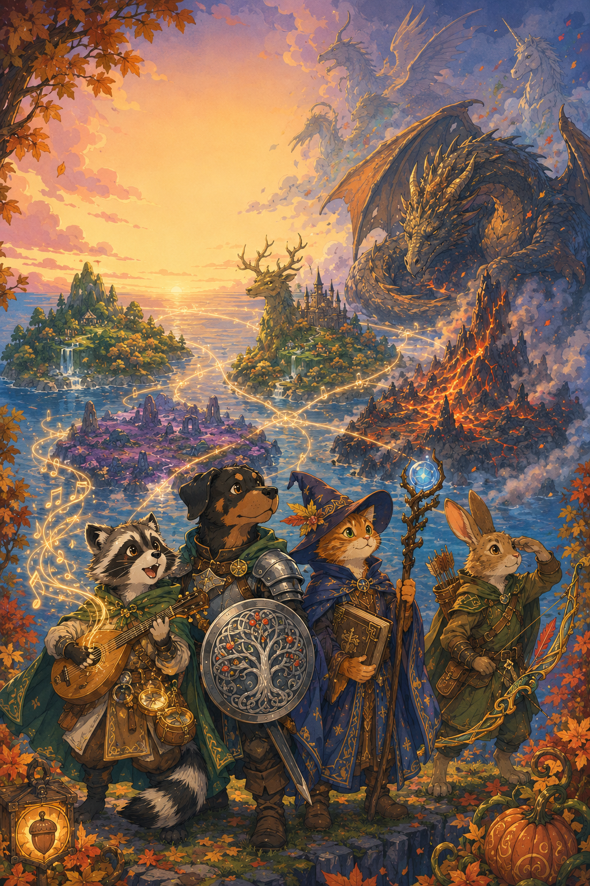

She sang as she galloped through the shallow waves, her hooves barely touching the water as she sped along the shoreline. Her silver mane streamed behind her like seafoam. The autumn sunset painted the sky in shades of orange and gold, and the kelpie’s voice rose and fell with the rhythm of the tide. She sang the old songs. The songs that had been sung since the first waves touched the first shores.
Songs of storms and calm seas, of creatures that swam in the deep, of the moon pulling the tides like a great silver thread. These were her songs. They always had been. She rounded the southern curve of the coastline, heading toward the place the land-dwellers called the Crying Rocks. The massive stone formations jutted up from the shallow water like giants frozen mid-step. She’d always loved this place—the way the rocks stood in a circle, protective and ancient.
Below her, tide pools glimmered in the fading light. Small crabs scuttled between the rocks. A lone starfish clung to a stone, purple as a summer plum. Everything was as it should be.
Then the wind changed.
It happened so suddenly that the kelpie lifted her head, nostrils flaring. The breeze that had been mild and salty went cold. Bitter cold, the kind of chill that had no place in autumn. The song vanished in her throat.
Something was wrong. She turned, scanning the horizon. The sea stretched out before her, endless and gray. The sun was sinking lower, touching the edge of the world. Everything looked normal. But the feeling wouldn’t leave her. The water around her hooves had gone far still. The waves had stopped their gentle lapping against the rocks. Even the tide pools lay flat as glass. The kelpie’s ears swiveled back.
Something was behind her. She spun around. The sky had gone dark. But it wasn’t night—the sun was still there, a thin rim of gold at the horizon. Something else had blocked out the light. A shadow. Enormous. Vast. Moving across the sky like a storm cloud, but no storm had ever moved like that. The kelpie heard the sound of wind—not the natural wind of the sea, but something else. Something powerful.
Wings. The beating of great wings. The kelpie’s instinct was to run. Every part of her wanted to gallop into the deep waves, to dive where she was safe, where she belonged. But she couldn’t move. Her hooves felt frozen to the sandy bottom beneath her. The shadow swept over her, blotting out the last of the sunset. She tried to sing. If she could just sing, the magic would protect her. The old magic always protected those who remembered the songs.
But her voice remained caught in her throat. No—she had to do something. She had to leave a message. With the last of her strength, with the last flickers of her magic before the cold took her, the kelpie reached out to the rocks around her. She poured what remained of her song into the ancient stones, leaving marks for those who might find her. Please, she thought desperately. Let someone find them. Let someone understand.
Fear shot through her like ice. The winged mass descended. She felt it then—a magic stronger and older than anything she’d ever known. Not cruel, exactly. Not hateful. But terribly, desperately sad. Like a song that had forgotten how to end. The kelpie tried one more time to move, to dive into deeper water, to do anything. But her legs wouldn’t obey.
The cold spread from her hooves upward. Through her legs, along her back, into her silver mane. It wasn’t the cold of winter or the cold of the sea’s depths. It was the cold of stone. And then the kelpie, body and mind, was still.
The shadow moved on, disappearing into the darkening sky. The waves around her feet remained frozen mid-crest. The tide pools lay silent. Between the Crying Rocks, where moments before a kelpie had sung to the setting sun, there now stood a statue.
Perfect. Beautiful. Caught mid-leap with her mouth open in song. And completely, utterly still. The autumn wind tried to blow, but it had forgotten how.
The songs were gone.
Hazel’s paws danced across the strings of her lute. The notes drifted through the fire-warmed tavern like leaves swirling on the wind. All around her, animals tapped their feet and swayed to the music.
“The summer’s gone and leaves fall soft,” she began gently, her raccoon tail swaying with the floating melody, “the harvest moon hangs high aloft.”
The Acorn Tavern in Bramble Town was Hazel’s favorite place to perform. Pumpkins that were carved into makeshift lanterns glowed on every table. The smell of warm, cinnamon-spiced apple cider filled the air. Tonight, the tavern was packed with creatures from all across the Four Isles. There were rabbits and moles, badgers and beavers, and a family of prickly hedgehogs sitting up front listening most intently.
“She’s wonderful,” whispered a young rabbit to her mother. Hazel’s heart felt full. This was what she loved most in the whole world—sharing songs with others. Her songs weren’t just pretty sounds. They carried magic in them, the way her grandmother had taught her. A good harvest song helped the crops grow tall. A healing song could mend a scraped knee. And a lullaby ensured a long night’s sleep for restless young ones. She closed her eyes to start the next verse.
“The pumpkins in the—” Suddenly, the words vanished from her mind. Hazel’s eyes snapped open. Her paws froze on the strings. What came next? She knew this song. She had sung it a hundred times. But suddenly, the words were just… gone.
“The pumpkins in the… the…” Nothing. It was like trying to remember a dream that slips away the moment you wake up. Hazel’s paws trembled. She tried a different song.
“Over the mountain and—” Gone.
“When the sun is—” Gone. Every song she had ever known had disappeared from her mind like morning mist. She could strum and pluck her lute, but no melody or words could reach her tongue. The tavern had grown quiet, and everyone was now staring at her.
“Hazel?” called Old Barlow, the badger who owned the tavern. “Are you all right, dear?”
“I… I don’t…” Hazel’s voice cracked. “I can’t remember. I can’t remember any of them.”
After some time of commotion and upset, a sudden gasp came from the corner. The beaver in the back stood up, plucking the strings of her fiddle aimlessly. “I can’t either,” she said after trying to sing along, her voice shaking. “The words are all gone!”
A squirrel brought a flute to his lips and blew. Notes came out, but when his brother opened his mouth to sing along, nothing followed. Their eyes went wide with fear. All around the tavern, animals began talking at once.
“I can’t remember the harvest song!”
“Even the simple ones are gone—I can’t remember anything!”
Hazel sank down onto her stool, clutching her lute. The beautiful instrument felt heavy in her paws now. What good was a lute without songs to sing? What good was a bard with no word spells? The door to the tavern burst open. A young otter rushed in, out of breath.
“Has anyone else forgotten? All the songs in the village—they’re gone!”
The room erupted in worried chatter. Some animals headed for the door, wanting to return home and check on their own affairs. Others stayed, hoping someone would have an answer. Hazel barely heard any of it. She stared down at her lute, feeling emptier than she had ever felt before. Songs had always been a part of her, like breathing. How could they just disappear?
Just then, a black and brown dog in shining armor gently made his way through the crowd.Beside him walked an orange cat in a wizard’s cloak and pointed hat, carrying a tall wooden staff with a perfectly round crystal set in the top of its gnarled wood.
“Everyone, please stay calm,” barked the dog in a strong voice. “I am Sir Alder of the Queen’s Guard, and this is my most trusted friend, Huckleberry.” The cat tipped his wizard’s cap as a quiet introduction. His friend made enough fanfare for the both of them. “We’re going to figure out what’s happening.”
Huckleberry stepped forward, his robe billowing. “Has anyone seen anything unusual? Heard anything out of the ordinary?”
“Just that all our music is gone!” squeaked a wee mouse.
“Actually,” said the beaver mother slowly, stepping out the front door, “now that you mention it… the wind hasn’t made a sound. Not even a whisper through the trees.”
The tavern fell silent as everyone in their own time observed this. “She’s right,” someone whispered. “The wind always sings in autumn. But now… nothing.”
Huckleberry’s whiskers twitched with concern.
“No wind songs? Without them, the seasons won’t know when to change. The trees won’t know when to drop their seeds. This is more than just forgetfulness,” he said quietly, tapping his staff on the floor. “Songs carry old magic. Without them, things in the world will begin forgetting how to work.”
A worried murmur rippled through the crowd. Hazel stood up on shaky legs. She had to get out of here. Everyone was looking at her with pity, and she couldn’t bear it. Clutching her lute, she hurried toward the door.
“Wait!” called Alder. “It’s dangerous to go alone—” But Hazel was already outside, running into the autumn night. Golden leaves crunched under her paws. The moon shone bright above. But the world felt wrong. Too quiet. Too empty. No songs. No magic. No Hazel. She sat down on a tree stump at the edge of the village and buried her face in her paws. For the first time in her life, Hazel the bard had nothing to sing about. Behind her, the tavern door opened again. She heard the gentle jingle of armor and the soft tap of a wizard’s staff on cobblestone.
“Hazel?” said a kind voice. “You don’t have to face this alone.”
Hazel couldn’t bear to look up when she heard the footsteps approach. She just pulled her knees closer and tried to make herself smaller.
“Miss Hazel?” Sir Alder’s voice was gentle. “May we sit with you?”
She nodded, still not raising her head. The knight settled down on one side of the tree stump, his armor clinking softly. Huckleberry sat on the other side, resting his staff against his shoulder. For a long moment, nobody said anything. They just sat together in the quiet autumn night. Finally, Hazel whispered, “I’m supposed to be a bard. That’s who I am. Without my songs, I’m… I’m nobody.”
“That’s not true,” Alder said kindly. “You’re still Hazel. The songs might be gone, but you’re still here.”
“But being a bard is all I know how to do!” Hazel’s voice cracked. “My grandmother taught me every song. Every word spell she knew. And now they’re just… gone. Like they never existed.”
Huckleberry adjusted his posture, the crystal in his staff glowing faintly in the moonlight. “The songs can’t be gone from the world, Hazel. They’re just… lost. In need of being found. There’s a difference.”
Hazel finally looked up. “What do you mean?”
The wizard’s whiskers twitched thoughtfully. “Think of it this way. When you sing a song, where does the magic come from?”
She thought for a moment. “From the words of our ancestors,” Hazel said. “And the melodies of nature. That’s what my grandmother taught me.”
“And where did your grandmother learn them?”
“From her grandmother. And she learned them from hers. Going all the way back as far as history remembers.”
“Exactly!” Huckleberry’s eyes lit up. “These songs are old. Older than any of us. They’re part of the great web that connects everything together—every tree, every stone, every creature. The magic isn’t just in your mind, Hazel. It’s woven into the world itself.”
Hazel frowned, trying to understand. “But if it’s woven into the world, why can’t I remember any of it?”
“Because something has upset the web,” Huckleberry said seriously. “Something—or someone—has pulled at the threads. The songs are still out there, but we can’t reach for them anymore.”
A faint breeze rustled through the trees, but it made no sound at all. Usually, the autumn wind sang as it moved through the branches. Now it was silent, like the world was holding its breath.
“Did you notice?” Huckleberry pointed up at the trees with his staff. “The leaves should be falling. It’s the season for it. But look—they’re just hanging there, not knowing what to do.”
Hazel looked up. He was right. The golden and deep red leaves clung to the branches, perfectly still.
“Without the autumn songs,” Huckleberry continued, “the wind has been silenced and the trees have forgotten how to let go. Everything is connected, you see. If the magic of the songs disappears, the whole world starts to come out of balance.”
“Can we fix it?” Hazel asked, a tiny spark of hope lighting in her chest.
“I believe we can,” Alder said, standing up and offering Hazel his paw. “But we need help. The Queen is very wise. If anyone knows what to do, it’s her.”
“Th — the Queen?” Hazel’s eyes widened. She’d never so much as approached the shadow of the castle before, let alone gone inside.
“She’ll want to meet you,” Huckleberry said, rising to his feet. “You were the first to lose your songs, which means you might very well be an important piece to solving this mystery.”
“Me?” Hazel clutched her lute tighter. She didn’t feel important. She felt small and scared and useless without her music.
“Very important,” Alder said with a warm smile.
“Come on. It’s a long walk to the castle at the foot of the mountains, but if we leave now, maybe we’ll arrive before we fall asleep!”
Hazel stood slowly, her legs still shaky. “Do you really think the Queen can help?”
“I know she’ll try,” Alder said. “And you won’t be alone. Huck and I will be right there with you.”
They started walking back through the village. The Acorn Tavern was dark now, everyone having gone home to be with their families. The streets were empty and strange. There was a deep quiet that none of them had felt before. As they passed the miller’s house, Hazel could hear the water wheel groaning and creaking, eerily slow as the river settled and the winds remained silent as a stone. In the distance, someone was crying—probably a child who couldn’t sleep without a lullaby.
“It’s getting worse already,” Hazel whispered. “Which is why we must hurry,” Huckleberry said, walking a bit faster “The longer the songs are gone, the more the world will forget how to work.”
They left the village behind and continued up the road through bramblewood for which Bramble Town was named. The path was well-worn, but in the darkness and silence, it felt unfamiliar. Usually, this forest was full of life—streams flowing, crickets fiddling, leaves rustling with their own music. Now it was as silent as a held breath.
“Tell us about yourself, Hazel,” Alder said as they walked. “How long have you been singing?” His voice brought comfort merely by breaking the silence.
“As long as I can remember,” Hazel said quietly. “My grandmother raised me. She always said I could sing before I could talk. She taught me everything—how to hold the lute, how to read melody staves, how to put my heart into every word.”
“She must have been a wonderful teacher,” Huckleberry said.
“She was. She told me that the songs would always be with me. That as long as I remembered them, they would never truly be gone.” She laughed bitterly. “I guess she was wrong.”
“No,” Huckleberry said firmly, stopping their pace to make eye contact. “She was right. The songs are still with you, Hazel. We just need to find the way back to them.”
She tried to believe the wizard. They walked in silence for a while, climbing hills and crossing streams. Hazel noticed that the water in the brooks wasn’t babbling the way it should. Even the streams had lost their songs. As the night grew deeper, Hazel found herself getting sleepy. She stumbled over a root and nearly fell, but Alder caught her gently by the elbow.
“Not much farther now,” he said encouragingly. “Look—you can see the lights of the castle.”
Hazel looked up. Through the trees ahead, she could see a warm glow. The royal castle sat on a hill in the distance, flickering windows in its turrets lit with candles and firelight, the moon illuminating the outline of the towering mountains behind it. The path began to climb upward. Hazel’s paws ached, and her shoulders were tired from carrying her lute slung on her back. But the sight of the castle ahead gave her strength to keep going.
“What if she can’t help?” Hazel asked quietly. “What if nobody can?”
Alder put a reassuring paw on her shoulder. “Then we’ll find another way. But I’ve known the Queen my whole life, Hazel. She’s never given up on anything. She won’t give up on this, especially if the whole Queendom is affected.”
They emerged from the bramblewood onto a wide, cobbled road. Ahead of them, the castle gates rose tall and grand, carved with images of deer and intertwined antlers and ancient trees. Two guards stood at attention, great burly elk, their armor gleaming in the torchlight.
“Sir Alder!” one of the guards called out. “We’ve been expecting you. The Queen has summoned all her advisors.” he paused for a moment, his expression growing somber. “She knows about the songs.”
“Then she’ll want to meet young Hazel here,” Alder said. “She was the first to lose them.”
The guards looked at Hazel with curiosity and sympathy. They pulled open the great gates, and the three travelers walked through. Hazel looked up at the towering castle walls, her heart pounding. Somewhere in there was the Queen—the wisest creature in all the Four Isles. Is she wise enough? She hoped so.
The inside of the castle was even more magnificent than Hazel had imagined. Tall stone arches reached up to painted ceilings. Tapestries hung on the walls, showing scenes of ancient forests and magical creatures. Candles flickered in iron sconces, casting dancing shadows. A mouse in fine robes hurried toward them.
“Sir Alder! Thank goodness you’ve arrived. The Queen is waiting in the great hall. Follow me, please.”
They walked through corridor after corridor, their footsteps echoing on the stone floors. Hazel tried not to gawk at everything, but it was hard. She’d never seen anything so grand. Finally, they reached a massive wooden door carved with images of deer standing beneath a starry sky. The mouse pushed it open, and they stepped inside. The great hall was enormous. A long table filled the center of the room, surrounded by animals of all kinds—foxes in scholarly robes, owls with spectacles, a beaver holding rolled-up maps.
At the far end of the table, on a carved wooden throne, sat the Queen. She was a magnificent white deer with a crown of silver resting on her head. Her eyes were kind but tired, and when she saw them enter, she stood gracefully.
“Sir Alder,” she said, her voice clear and strong. “And Huckleberry. I see you’ve brought a young bard?”
“Yes, Your Majesty,” Alder said, bowing. Huckleberry bowed too, and Hazel quickly tried to copy them, nearly dropping her lute.
“Come closer, young one,” the Queen said gently. “Don’t be afraid. I don’t bite.”
The queen let out the faintest laugh. Hazel walked forward on shaky legs. Up close, the Queen seemed even more impressive, but her eyes were warm.
“What is your name?”
“H-Hazel, Your Majesty,” she managed to say.
“Hazel. I understand you were performing when the songs disappeared?”
Hazel nodded. “I was singing at the Acorn Tavern. And then… they were just gone. All of them.”
A murmur ran through the room. The Queen raised a hoof for silence. “You were not alone,” she said. “My Master Bard, Corvus, lost his songs tonight as well.” She gestured to a large raven sitting near the throne, his wings drooping. In his talons, he held a beautiful harp, but he looked at it with despair.
“I’ve tried everything, Your Majesty,” the raven croaked. “Every song I ever knew—the old ballads, the sleeping songs, even the simple children’s rhymes. All gone.”
“It’s happening across all of the Isles,” said a scholarly fox, adjusting her spectacles.
“We’ve had reports from messengers who flew through the night. Every bard, every musician, every creature who knew the old songs—they’ve all forgotten.”
“But why?” Hazel asked, her voice small in the big room. “How can everyone forget at the same time?”
The Queen looked to Huckleberry. “Perhaps you can explain, old friend?”
Huckleberry stepped forward, leaning on his staff. The crystal at its top glowed softly. “The songs are ancient magic, woven into the world itself. They’re not just in our memories—they’re part of the great web that connects all things. For the songs to vanish like this, something must have happened to the web itself.”
“Something, or someone,” said a gray owl darkly.
“What do you mean?” Hazel asked. The Queen sighed.
“We believe the songs have been… taken. Stolen away by some force we don’t yet understand.”
“But who would do that?” Hazel clutched her lute tighter. “Why would anyone want to steal songs?”
“That,” said the Queen, “is what we must discover.” She paused, looking around the room at her advisors. “But there may be hope. My scholars have been searching the old texts, and we’ve found something important.”
She gestured to a fox, who looked very learned and wise. He stepped forward with an ancient-looking book, brittle parchments barely being held together by scrappy bits of leather.
“Your Majesty, if I may,” the fox said, adjusting her spectacles.
“The oldest legends speak of creatures who were here before any of us—mythical beings. Griffins, trolls, dryads, kelpies, basilisks, hydras, phoenixes.…the list goes on. Creatures of pure magic who sang the very first songs.”
“I thought those were just stories,” Hazel whispered. “And there are many who believe the same,” the Queen said. “And many of them may very well be just stories. But texts suggest otherwise, at least for some. Some of these creatures were real, and some may still exist, hidden away from the world. If the songs have been taken from us, these ancient beings might still remember them.”
“But Your Majesty,” said a gray owl, his feathers fluffed in a tizzy, “no one has seen such creatures in living memory. How would we even begin to find them?”
The Queen nodded slowly. “That is the challenge. They hide themselves well, sometimes in the Otherworld itself. But…” she turned to a beaver who was shuffling through papers and maps. “Barnaby, tell them what you heard.”
The beaver cleared his throat. “Well, Your Majesty, I’ve been tracking strange reports from Port Town on the southern coast of the West-Moor-Lands. Ships’ captains speaking of unusual sightings near the rocks. Fishermen finding strange symbols carved in the tide pools. And one old sailor—a fox named Captain Maren—who claims to have seen something she can’t explain.”
Huckleberry’s whiskers twitched with interest. “You think she might have seen one of the mythical creatures?”
“It’s our best lead,” the Queen said. “Someone must go to Port Town and speak with her. Learn what she knows. And if there truly is a mythical creature near those shores…” she paused meaningfully, “perhaps they can help us understand what happened to the songs.”
“But Your Majesty,” Corvus the raven said quietly, “even if we find one of these creatures, why would they help us? They’ve stayed hidden for so long…”
“Because,” Huckleberry said thoughtfully, tapping his staff, “if someone has stolen the songs from the world, it affects them too. The web connects us all—even the mythical creatures. They might remember their songs, or perhaps they too have forgetten. Regardless, they will have felt this disturbance to the balance of all things.”
The Queen nodded. “Exactly. We’re all part of the same world, bound by the same magic. If we can find them, we might find answers, and we may very well be helping them in return.” She turned her gaze to Hazel, Alder, and Huckleberry. “I need brave souls willing to venture out and find these creatures. To learn what they know and bring the songs back to our world.”
Alder stepped forward immediately. “I’ll go, Your Majesty. It’s my duty as a knight of the Queen’s Guard to protect Queen and Realm. I swore an oath to you, and by that I am bound. Yet even without oath, I wouldn’t shy away from such a meaningful quest!”
“And I’ll accompany him,” Huckleberry said. “My rune magic may be useful, especially when everyone else has lost the old songs.” He turned to Alder. “And besides, we’ll need brains, not just brawn,” he chimed playfully, one cat eye winking towards Alder in jest. The Queen nodded. Then she looked at Hazel.
“And you, young bard? Will you join them on this quest? The choice is yours, but it seems fate has laid this journey before you.”
Hazel’s mouth went dry. Her? Go on a quest to find mythical creatures? She was just a tavern performer. She wasn’t brave like Alder or wise like Huckleberry. But then she thought of her grandmother. Of all the songs she’d been taught. Of the magic that had been stolen from her.
“Yes,” Hazel finally responded, surprised by the strength in her own voice. “Yes, I’ll go.”
The Queen smiled. “Good. You may be more important to this quest than you know. The songs chose you first—there must be a reason.” She gestured to the beaver and his pile of maps. “Barnaby, show them where they can find Captain Maren in Port Town.”
Barnaby spread out a large map on the table. Hazel could see the Four Isles drawn in careful detail—the Isle of the Deer where they stood now, the Great Wood Isle to the east, the West-Moor-Lands to the west, and far to the northeast, a small island marked “The Lost Isle”, surrounded by notes of warning. Barnaby began to trace a route with his paw.
“Follow the western road through to the Moorlands Crossing. Be careful—the moors can be treacherous, especially without the songs. When you arrive, seek out Captain Maren at the harbor. She’ll be expecting you—I’ll send word by the fastest riders.”
“We’ll provision you for the journey,” the Queen said. “Food, warm cloaks, and whatever supplies you need. Find Captain Maren. Learn what she’s seen. And if you can find one of the mythical creatures…” she paused, her voice full of hope, “perhaps they can help us bring some songs back home.”
Alder bowed. “We’ll leave at first light, Your Majesty.”
“Good.” The Queen stood, and everyone in the room stood with her. “May the old magic guide you. And may you bring the music back to our world.” She approached Hazel and placed a gentle hoof on her shoulder. “Don’t lose hope, young one. Your grandmother taught you well. Remember, the songs are not gone—they’re just waiting to be found again.”
Hazel felt tears prick her eyes. “I’ll do my best, Your Majesty.”
“That’s all anyone can ask.”
As they were led out of the great hall toward the guest quarters, Hazel looked back one more time. The Queen stood at her throne, looking out a tall window at the silent mountains beyond. For the first time since the songs disappeared, Hazel felt something other than despair. She felt purpose.
The morning sun painted the castle courtyard in shades of gold and amber. Hazel adjusted the straps of her pack, feeling the weight of supplies the Queen had given them. Her lute was safely secured on her back, silent but precious.
“Ready?” Alder asked, his armor gleaming in the dawn light. He’d polished it specially for the journey, and his sword hung proudly at his side.
“As ready as I’ll ever be,” Hazel said, though her stomach fluttered with nerves. Huckleberry emerged from the castle carrying a rolled map and a small pouch that clinked as he walked.
“Provisions, coins, and a few herbs that might prove useful,” he explained, tucking them into his cloak. “The Queen’s quartermaster was most generous.”
As they walked through the castle gates, Hazel looked back at the tall towers, wondering when—or if—she’d see them again. The road wound through the western hills of the Isle of the Deer, past fields where sheep and goats were beginning their day’s work. But something was wrong. The farmers moved slowly, mechanically. Usually, they’d sing as they worked—harvest songs, planting songs, cheerful tunes to make the labor lighter. Now there was only silence, broken occasionally by the clink of tools or a muttered conversation. “It’s so quiet,” she whispered to herself.
“Yes,” Huckleberry replied sadly, hearing her observation. “The songs were woven into daily life. Without them, everything indeed feels… hollow.”
As they traveled west, the landscape began to change. The neat farms and villages gave way to wilder country—rolling hills covered in bracken and heather, ancient oak trees standing like sentinels. The autumn colors were spectacular, but without the songs of the autumn wind to accompany them, even the beautiful forests felt strange.
“Tell me about the West-Moor-Lands,” Hazel said, trying to distract herself. “I’ve never been there.”
Huckleberry settled his pack more comfortably on his shoulders, his staff tapping a steady rhythm as they walked. “It’s a curious place. Three parts to it, really. In the far south, where we’re headed, there’s Port Town—a bustling harbor where ships come and go. The middle is the moors themselves—wide, open, mysterious. Some say spirits wander through the mists of the Moors, though most are just old tales.”
“Spirits?” Hazel’s eyes widened.
“Just stories, probably,” Alder said. “Every wild place has such tales.”
“The moors certainly hold powerful magic, though,” Huckleberry said thoughtfully. “I have an old friend who lives there, in fact. A witch named Fionnula. Powerful healer. Keeps to herself mostly, tends to her garden, brews remarkable teas.” He smiled at a memory. “Perhaps we’ll pass her cottage on the way back.”
“A witch? Can she do real rune magic like you?” Hazel asked, fascinated. She also realized then that she’d yet to see the wizard perform this “real” magic of which she spoke.
“As real as you or me,” Huckleberry said. “Though she’d probably say we’re all a bit magical, if we’d only pay attention.” He continued, “And in the far north, the land rises into snowy peaks and old mining caverns. It’s beautiful, but harsh.” He pointed to the distance with the tip of his staff. “If you look you can see the purple mountain peaks rising up. Beyond them stretches the North Sea.”
They walked all morning, stopping only once to share some bread and cheese by a still stream. Hazel dipped her paws in the cold water, washing her face. Even the stream seemed too quiet—she remembered waters that seemed to gurgle and laugh. By afternoon, they’d reached the narrowest point between the two isles. Before them stood a great wooden bridge, ancient and weathered but still sturdy. Its timbers were carved with intricate patterns—swirling spirals and knotwork that reminded Hazel of the designs in her grandmother’s old songbooks.
“Ahh yes, here it is at last. The Vestrbrudge,” Huckleberry said, pausing to look at it. “The Bridge to the West, built hundreds of years ago, before even cats as old as me roamed!”
At the bridge’s entrance stood a tall stone marker, halfcovered in lichen and moss. Carved deeply into its surface were the words: “West-Moor-Lands” on one side, and when they passed it and looked back, “Isle of the Deer” on the other.
“I’ve never been so far from home before,” Hazel said. “This is my first time leaving my isle.” Their footsteps echoed on the wooden planks as they crossed the massive bridge, stretching far across the channel. Below them, the narrow strip of seawater stood still, dark and deep. Hazel kept close to Alder, trying not to look down at the dizzying drop.
When they finally reached the far side of the long bridge, the landscape opened before them, vast and misty. The moors stretched out in every direction—endless rolling hills covered in blooming heather, with strange rock formations jutting up like ancient guardians.
“Stay close,” Huckleberry warned. “The path isn’t always clear, and the mists can be deceiving.”
They walked single file—Alder in front with his hand ready on his sword, Hazel in the middle clutching her lute, and Huckleberry at the rear, his staff tapping a steady rhythm on the ground. The moors were beautiful in a wild, lonely way. The mist came and went, revealing and hiding the landscape in turns. Sometimes Hazel could see for miles, other times she could barely see Alder’s armored back just ahead of her.
“I wish I could sing,” Hazel said quietly.
“My grandmother taught me a walking song for long journeys. It was supposed to make your feet lighter and your spirit brighter. I’ve never journeyed before, so I’ve never gotten a chance to truly sing it. Before my mum was born, grandmum would go on many adventures across the isles. She told me lots of incredible stories. She always said the walking song was one of her favorites.”
“Can you remember how it went?” Alder asked gently. Hazel tried to hum it, but the melody slipped away before she could catch it, like trying to hold water in her paws. She shook her head, frustrated.
“The songs will come back,” Huckleberry said. “If you can’t share her songs, maybe you could indulge us in one of her grand adventures?”
“Well, I suppose I could!” Hazel replied. The request perked her spirits up.
“Long ago, she was living in Port Town where she would play every week at the Seamoss Inn. But one night, just as she was beginning to strum the opening of The Ballad of the Sea Snake, the door of the inn was smashed down — by a band of pirates!”
As afternoon faded to evening, Hazel continued her story, a passionate retelling of the entertaining tale. But Alder suddenly raised a paw, signaling them to stop.
“Did you hear that?”
“Hear what?” Hazel whispered. “A deep noise. Whoosh! Like the wings of a great bird many times the size of any I’ve ever met. Listen….”
Quiet now, they all heard it this time. Whoosh. The looked to the sky, where the sun shone through a parting in the low clouds. Seeing nothing, the all looked at each other. Alder looked serious, and Huckleberry’s fur stood up. He sensed danger. In the moment, the world around them darkened, briefly. They looked up to see something flying high above the clouds, momentarily blocking out the sun’s light. Hazel gulped.
“Maybe… maybe just another cloud?”
Huckleberry’s whiskers twitched nervously.
“Perhaps. But keep your eyes open, your hands ready. Something about that shadow…” He trailed off, troubled. They pressed on, and just as the sun was touching the horizon, they crested a hill and saw it: Port Town, spread out below them. Lanterns were beginning to light in windows, and the harbor was full of ships with colorful sails. Even from this distance, they could see all manner of animals moving about on the docks.
“We made it,” Alder said with satisfaction.
“Come on. Let’s find Captain Maren before it gets too dark.”
They descended the hill toward the town, unaware of the large shadow that passed overhead once more, briefly blocking out the stars that were just beginning to appear. In Port Town, questions awaited them. And somewhere out on those dark, rocky shores, something ancient was waiting too.
Port Town was alive with activity, even as night fell. Lanterns swung from posts along the wooden docks, casting dancing reflections on the dark water. Ships of all sizes bobbed in the harbor—fishing boats with patched sails, merchant vessels loaded with barrels, even a sleek ship that Hazel thought might belong to someone important. The air smelled of salt and fish and seaweed, and animals bustled everywhere.
Otters hauled nets full of the day’s catch and sold their bounties to hungry gulls and pelicans. A family of beavers loaded timber onto a cart. Mice and voles scurried between the buildings, carrying messages and packages. Hazel was relieved to be away from the silence they’d been surrounded by through the moors.
“Where do we find Captain Maren?” Hazel asked, looking around at all the activity. Hazel liked Port Town already.
Huckleberry consulted his map. “Barnaby said she keeps a ship called the Silver Fin at the eastern docks. We should ask around.”
They approached a grizzled otter who was coiling rope on the dock. “Excuse me,” Alder said politely. “We’re looking for Captain Maren of the Silver Fin.”
The otter looked them up and down—a knight in armor, a wizard with a staff, and a young raccoon with a lute. “What business do you have with the Captain?”
“We’re on a quest from the Queen,” Alder said, standing a bit straighter. The otter’s eyebrows rose.
“The Queen, eh? Well, the Silver Fin is three docks down, but the Captain’s not aboard. She’s at the Seamoss Tavern—just at the end of the road.” He pointed with a weathered paw. “Can’t miss it. Big anchor painted on the sign.”
They thanked him and made their way along the waterfront. The Seamoss Tavern was easy to spot—a sturdy building built right on the dock, with the promised anchor sign swinging in the sea breeze. Warm light spilled from its windows, and through them Hazel could see it was crowded with sailors and dockworkers.
“Stay together,” Alder said, pushing open the door. Inside, the tavern was warm and noisy, though lacking the usual rambunctiousness of sailor’s songs. Creatures sat at tables, talking and gulping out of big tankards and shoveling down hearty bowls of chowder. In a proper sailors’ tavern, there should have been sea shanties, voyaging songs, rowdy choruses. Instead, there was just conversation and clanking, flat and strange without the music that usually bound it all together. An old toad stood behind the bar, polishing mugs with slow, deliberate movements. His skin was mottled green and brown, and he wore a vest with brass buttons that strained slightly across his broad belly.
“Welcome, travelers. What can I get you?”
“We’re looking for Captain Maren,” Huckleberry said. “We were told she’d be here.”
The toad’s throat puffed out slightly as he nodded toward a corner table. “That’s her. The fox with the blue coat.”
Hazel looked and saw a striking red fox sitting alone at a corner table, staring into a mug of something dark. She wore a deep blue captain’s coat with wooden toggles, and a tricorn hat sat on the table beside her. Her eyes had a distant, troubled look. They approached her table.
“Captain Maren?” Alder asked. The fox looked up, her sharp eyes taking them in.
“That depends. Who’s asking?”
“We’re sent by the Queen,” Alder said. “We need to speak with you about—”
“About what I saw,” Captain Maren interrupted, her voice low. “I should have known word would reach the castle.” She gestured to the empty chairs at her table. “Sit. Though I warn you, you might not believe me.”
They settled into the chairs. Up close, Hazel could see that Captain Maren looked exhausted, with dark circles under her eyes.
“The Queen’s scholars said you reported…unusual sightings,” Huckleberry began gently “Near the rocks south of west?”
Captain Maren took a long drink from her mug before answering. “Three days ago, I was sailing into port. It was just after dawn, the sea was calm. We were passing the Crying Rocks—that’s what we call the tall formations west of here.” She paused, as if gathering courage. “And I saw… something.”
“What did you see?” Hazel asked, leaning forward.
“A creature,” Captain Maren said quietly.
“Rising from the water. It looked like a horse—a beautiful horse—but wrong somehow. Its mane was like stardust, flowing and silvery and luminous. Its eyes were like pools of deep ocean. I looked at it, and it looked back at me on the deck, and I felt…well, I can’t explain it. Like it knew me. And it sang a most rousing song, I only wish I could remember.”
“Water horse,” Huckleberry breathed. “A kelpie.”
Captain Maren nodded slowly. “That’s what I thought too, though I always believed they were just legends. But it gets stranger.” She leaned in closer. “I came back to look for it the next day, and there it was, only the creature didn’t move. It was frozen and gray, like it was made of stone. It just stood there in the shallow water by the rocks, perfectly still. It wasn’t moving at all. Not breathing, not blinking. It was like…like a statue. Like it had been turned to stone, but standing upright in the water.”
A chill ran down Hazel’s spine. She thought of what the Queen had said—about mythical creatures who might still remember the songs.
“And you’re certain what you saw the day before wasn’t this stone statue? Our eyes can play funny tricks.” Huckleberry asked intently.
“As certain as I can be from a quick view in a spyglass,” Captain Maren said. “I had wanted to get closer, but my crew refused. They said it was bad luck, that we should sail on. And I…” She looked ashamed. “I let them convince me. I should have gone after it when I had the chance.”
“Well it seems like more than good luck that your story reached us,” Alder said firmly. “Can you show us exactly where you last saw it?”
Captain Maren pulled a worn map from her coat pocket and spread it on the table. “Here,” she said, pointing to a spot south of Port Town. “The Crying Rocks are just there. A path along the cliffs leads down to the shore. But I warn you—the rocks are treacherous, especially at high tide.”
“When is low tide?” Huckleberry asked, studying the map.
“Tomorrow morning, just after dawn,” Captain Maren said. “That would be your best chance to reach it safely.”
Hazel felt a mixture of excitement and fear. A real mythical creature! But turned to stone…what could have done that? She thought of the shadow that had passed over them, the shadow that surely was just a cloud…
“Captain,” Huckleberry said carefully, “have you noticed anything else unusual? Strange symbols, perhaps? Markings in unusual places?”
Captain Maren’s eyes widened. “How did you know? Yes! The rocks near where I saw the creature—they’re covered in carvings. I’ve sailed past the Crying Rocks a hundred times, and I never noticed them before. But that morning, they were so clear. Like someone had freshly carved them.”
Before they could ask more, the tavern door burst open and a young rabbit rushed in, fur windblown and eyes wild. She looked around frantically until her gaze landed on their table. Then she marched straight toward them.
“You,” she said, pointing at Captain Maren. “You’re the one who’s been spreadin’ tales about the Crying Rocks?”
Captain Maren bristled. “I’m not spreading tales. I’m reporting what I saw.”
The rabbit turned to look at Alder, Huckleberry, and Hazel. Her eyes were sharp and intelligent, and she wore practical traveling clothes with a bow slung across her back.
“And who are you three? More curious seekers?”
“We’re on a quest from the Queen,” Alder said, somewhat defensively. He puffed up his chest to compensate.
The rabbit’s ears perked up. “The Queen? Then you’re lookin’ for the creature too.” It wasn’t a question. She pulled up a chair and sat down without being invited.
“Clover, pleasure to meet you. I’ve been trackin’ strange happenings along this coast for the past week.”
“Strange happenings?” Huckleberry leaned forward with interest. Clover nodded.
“Fish abandoning their usual waters. Seabirds refusing to land on certain rocks. And three days ago, I found prints in the sand near the Crying Rocks—huge prints, like nothing I’ve ever seen. They led right into the water and didn’t come out.” She looked at each of them in turn. “Something is very wrong here. And whatever Captain Maren saw, I need to see it too.”
“We’re going at dawn,” Hazel said, surprising herself by speaking up. “To investigate the creature. You could…you could come with us?”
Clover studied Hazel for a moment, then nodded. “I will. Rangers go where they’re needed, and it seems I’m needed here.” She turned to Captain Maren. “Will you guide us?”
The fox captain shook her head. “I’ve told you everything I know. My ship sails with the morning tide—I have cargo waiting. But the path is clear enough. Follow the cliff road west until you see the tall rocks rising from the sea. You can’t miss them.”
Huckleberry rolled up the map carefully. “Thank you, Captain. You’ve been very helpful.”
As they stood to leave, Captain Maren caught Hazel’s paw. “Young one, be careful out there. Whatever that creature is, whatever happened to it…there’s something powerful at work. Something that doesn’t want to be found.”
Hazel nodded, not trusting herself to speak. Outside the tavern, the four of them stood on the dock. The moon was rising over the harbor, painting everything in silver light.
“We should find an inn,” Alder said. “Get some rest before dawn.”
“The Driftwood Inn is cheap and clean enough,” Clover offered. “I’ve been stayin’ there a spell. They’ll have rooms.”
As they walked through the quiet streets of Port Town, Hazel found herself walking beside Clover. The rabbit moved with absolute confidence, her eyes constantly scanning their surroundings.
“Have you been a ranger long?” Hazel asked.
“Since I was old enough to track,” Clover said. “I grew up in the northern mountains, in the wild edge of the world. My mother taught me to read signs in the wilderness—prints, broken twigs, the weather and the sun’s movements. Everything leaves a story in the world, if you know how to read it.”
“That sounds amazing,” Hazel said wistfully. “I wish I could do something like that.”
Clover glanced at the lute on Hazel’s back. “You’re a bard then? Spinner of word spells?”
“I was,” Hazel said quietly. “Before the songs disappeared.”
“Ah.” Clover was quiet for a moment. “I noticed it here too, of course. The sailors at the docks used to sing their shanties while they worked—now it’s just silence and the sound of ropes and wood. It feels wrong.” She looked at Hazel seriously. “But skills don’t disappear just because songs do. You’re still a bard. You just need to find your music again.” She threw her arm around Hazel and pulled her in close. Clover seemed rough around the edges at first, but she was already warming up to them.
“Thank you,” Hazel whispered.
The Driftwood Inn was a cozy building near the harbor. “Four rooms, please,” Alder said, counting out coins.
“And if you have any food left from dinner, we’d be grateful,” Huckleberry added. The innkeeper, a cheerful otter, was happy to accommodate them. Soon they were settled in the inn’s common room with bowls of warm stew and fresh bread. It was simple food, but after the long day’s journey, it tasted wonderful.
“So,” Clover said, breaking off a piece of bread, “tell me about this quest. Why is the Queen sending you after mythical creatures?”
Huckleberry explained about the songs disappearing, about the theory that ancient creatures might still remember them, about their hope to find answers. Clover listened carefully, her expression growing more serious.
“And you think this creature at the Crying Rocks might help?”
“If we can figure out why it’s turned to stone, it’s a start…” Huckleberry said. “And hopefully, we’ll find a way to reverse it.”
“You think someone did this on purpose?” Clover asked sharply.
“We don’t know yet,” Alder admitted. “But it seems too coincidental—all the songs vanishing, and now a kelpie turned to stone…there’s too much coincidence for these things not to be connected.”
Clover nodded slowly. “I’ll help however I can. Trackin’ is what I do best. If there are any clues, I’ll find them.”
After dinner, they each headed to their rooms. Hazel’s was small but clean, with a window overlooking the harbor. She could hear the gentle lap of waves against the docks, and in the distance, the creaking of ships at anchor. She sat on the bed and carefully took out her lute, running her fingers over the strings. No melody came—just the simple mechanical sound of plucked strings without purpose.
“Please come back,” she whispered to the silent instrument. “I need you.” But the lute remained quiet, and eventually, Hazel set it aside and lay down to have herself a much needed sob.
But tomorrow they would find the creature. Tomorrow they would begin to understand what was happening. Tomorrow, maybe, she would get her songs back. As she drifted off to sleep, she thought she heard something—a distant sound, like wings beating in the night sky. But when she went to the window and looked out, she saw nothing but stars and moonlight on the water.
Somewhere out there, beyond the harbor lights, the Crying Rocks waited. And with them, a mystery that might hold the key to everything.
Dawn came cold and gray over Port Town, the marine fog blanketing the masts of the docked ships. Hazel woke to the sounds of the gulls out working the docks, cawing and clattering. She dressed quickly, securing her lute on her back, and met the others downstairs. The innkeeper had left out apples and somewhat stale crackers for breakfast, which they ate quickly and quietly. Even Clover, who had seemed so naturally talkative, was subdued this morning.
“Ready?” Alder asked, adjusting his sword on his leather belt. Hazel nodded, though her stomach was full of butterflies. Today they would see the creature. Today they would begin to understand.
They left Port Town as the sun was just beginning to peek over the eastern sky, painting the sky in shades of pink and gold. The outline of Greatwood Isle could be seen on the horizon. The cliff road headed west along the coast. Without the sea breeze, the morning air was cold, salty, and stale — not unlike the innkeeper’s breakfast crackers.
“Low tide should be in about an hour,” Clover said, checking the sky and the water. “Perfect timing.”
They walked in silence for a while, following the winding path along the cliffs. To their right, the land rolled away in gentle hills covered in grass. To their left, the sea stretched endlessly, its surface unnaturally still. It lay flat as glass, barely lapping at the rocky shore below. Eventually they rounded a bend and saw them: the Crying Rocks. Massive stone formations jutted up from the shallow water, some as tall as castle towers, others smaller but no less imposing. They were dark gray, almost black, and worn smooth by countless years of waves that no longer sang.
“There,” Huckleberry said, pointing with his staff. Even from this distance, they could see it—a figure of a massive horse standing in the water between the rocks. Gray as stone, perfectly still, caught mid-movement as if frozen in time.
The kelpie.
“How do we get down there?” Hazel asked, looking at the steep cliff face. Clover was already moving, her sharp eyes scanning the rocks.
“There’s a path—see? The stones are worn, they’ve been used by thousands of paws before. Follow me, and step where I step.”
They descended carefully, one at a time. Alder went last, his bulky armor making the climb more difficult. Once or twice, loose stones skittered away beneath their feet, tumbling down onto the beach below. Finally, they reached the shore—a narrow strip of wet sand and smooth pebbles. The tide was low, just as Captain Maren had said, revealing a walkable path between the towering rocks. Up close, the Crying Rocks were even more impressive.
They rose around them like great beings, their surfaces covered in barnacles and dried seaweed. The morning air felt suddenly colder here, shadowed by the stones. And there, no more than thirty feet away, stood the kelpie. Hazel gasped. Even turned to stone, the creature was beautiful. It stood in the shallow water, its front hooves raised as if about to leap. Its mane flowed behind it—or had once flowed—now frozen in gray stone that looked like seafoam captured mid-spray.
“She was trying to sing,” Hazel breathed. “Look at her mouth—she was singing, or trying to, when it happened.”
Alder approached first, slowly. “What could do this? What power could turn living magic to stone?”
Clover was already moving around the creature, studying the ground. “The prints I found—they start here. She came from deeper water and stopped right here, surrounded by these rocks.” She looked up at the towering stones. “Why here? Why this spot specifically?”
“Maybe she was trapped,” Alder suggested, his hand resting on his sword hilt.
“Or maybe,” Huckleberry said slowly, “she chose to be here. Among the rocks. Protected. Hidden.”
“But from what?” Hazel asked.
Before anyone could answer, Clover called out. “Hey! Look at this!” She was standing at the base of one of the tallest rocks, running her paw over its surface. “There’s something carved here. Symbols.”
They hurried over. Sure enough, carved into the dark stone were intricate markings—two distinct sets side by side. One set showed swirling patterns and angular shapes. The other…
“Those are melody staves!” Hazel said suddenly, leaning closer. “Musical notes! Like in my grandmother’s songbooks!” Her heart beat faster as she traced the carved lines with one paw. “I can read these!”
“And these,” Huckleberry said, examining the swirling symbols beside them, “are runes. Ancient magical runes. I haven’t seen markings like this in… usually markings like this are older than the Queen’s castle. Older than any of us. But these look fresh, newly carved.”
“Musical notes and magic runes together?” Alder asked. “What does that mean?”
“Give me a moment.” Huckleberry traced the magical symbols with one paw, his whiskers twitching as he concentrated. Clover was already moving again, checking the other rocks.
“This one has them too! Both kinds! And this one!” Clover bounded from stone to stone with remarkable agility. “They’re everywhere—every rock around the kelpie has both sets of carvings!”
“She did this,” Huckleberry said intently. “The kelpie. She carved these herself, or made them appear through some old magic. She left a message—a message we were meant to find.”
Hazel moved from rock to rock, studying the melody staves. Her grandmother had taught her to read them when she was very small. Looking at the rocks, she could still recognize notes and rhythms.
“These melody staves… they’re beautiful.”
For the first time since that night she met Huckleberry and Alder, she gently plucked her lute.
“They fit together. Listen!”
The others felt their spirits lift and the weight of the world lighten around them as Hazel began to play the notes.
“Because she knew,” Huckleberry said softly.
“She knew what was happening to her. She knew she was being turned to stone. And in her last moments, she reached out with her magic and left these runes. The magical runes are instructions. The melody staves are her song.”
Hazel’s throat tightened. The kelpie, desperate and afraid, using her last moments not to flee but to leave hope—and music.
“We have to help her.”
“We will,” Alder said firmly.
“What next, Huck?”
The wizard moved from rock to rock, studying the magical runes carefully while Hazel pieced together the kelpie’s song.
“The melody—can you read the whole thing?” he asked her.
“Not yet,” Hazel said. “There’s too much covering them. Moss, vines, barnacles. But I can see enough to know they’re meant to go together.”
“I can do that,” Alder said, drawing his sword. The blade caught the morning light.
“Show me where.”
For some time, they all worked together quickly and excitedly. Clover scampered from rock to rock, finding each set of carvings and calling out their locations. Alder carefully used his sword to scrape away the thick moss and cut through the vines that had grown over them. Huckleberry studied each revealed magical carving, making notes on a piece of parchment he’d brought. Hazel followed behind, examining the melody staves as they were uncovered, humming quietly to herself as she began to piece the tune together.
Her paws grew cold and wet as she pulled away the seaweed and barnacles that Alder’s sword had loosened, but she didn’t care. They were doing something. They were helping. And more than that—she was reading music again, real music, left by a creature of pure magic.
“That’s the last one,” Clover called from the tallest rock.
“Eight stones, all marked by the kelpie’s magic.”
Huckleberry spread his parchment on a flat rock, arranging his notes. They all gathered around as Huckleberry read his notes.
“The magical runes tell us what to do,” Huckleberry said finally.
“But they’re written as a riddle… ‘When water stands still and wind forgets to blow, When songs are stolen and creatures turn to stone, Four must gather where the sea meets land, The tracker to find, the guardian to clear, The wise one to read, and the singer to hear. Not the old songs kept, but new songs made, From ancient patterns, a melody played. The notes are given, the tune is true, But only the bard can give them words anew.’” “And the melody,” Hazel added, “it’s all here. A complete tune. It’s a jig, I think.”
She hummed a few bars.
“Like waves dancing.”
Silence fell over them for a moment.
“New songs?” Hazel said quietly.
“But I don’t know how to make new songs. I only know the ones my grandmother taught me, and now even those are gone.”
“No,” Huckleberry said gently, placing a paw on her shoulder.
“You know more than you think. Your grandmother taught you the patterns, the structures, how songs are built. You may not remember her specific songs, but you remember how to create.”
“I don’t—I can’t—” “Yes, you can,” Clover said firmly.
“You’re a bard, Hazel. This is what bards do.”
“The kelpie has given you the tune,” Huckleberry said, gesturing to Hazel’s sketches.
“These notes, this rhythm—it’s all here. The melody is complete. But it needs words. It needs meaning.”
“But what words?” she asked, her voice small.
“Look at her,” Alder said softly, nodding toward the frozen kelpie.
“What do you see?”
Hazel turned to the stone creature. The kelpie stood with such grace, such wild beauty. Joy and sadness mixed together. And her mouth open, caught in song.
“She loved the water,” Hazel said slowly.
“She loved to sing. She was happy and free, dancing in the waves.”
“Yes,” Huckleberry encouraged.
“What else?”
Hazel studied the kelpie’s expression more carefully.
“She was… scared. When it happened. But brave too. She didn’t run away. She stayed here, among these rocks, and used her last moments to leave us this message. She wanted to be saved. She wanted to sing again.”
“Then tell her story,” Huckleberry said. “Sing about who she was, who she wants to be again. Sing about water and dancing and freedom. Use the melody she’s given you and put it into words.”
“But I’ve never written a song before,” Hazel protested.
“You’re doing it right now,” Clover said. “Everything you just said—that’s the start of a song.”
Hazel looked down at her sketches of the melody staves, then back at the kelpie. Her paws trembled as she reached for her lute. As she began to pluck out the melody the kelpie had left, the notes felt… right. Like they belonged together. Like they wanted to be played.
“Go on,” Huckleberry whispered. Hazel took a deep breath. The melody was quick and bouncing, six beats to a measure, rising and falling like the ocean should rise and fall. She played it through once, getting the feel of it. The tune seemed to flow naturally from her fingers, as if the kelpie herself was guiding them. Then, quietly at first, she began to sing.
“Once there danced a silver mare, Through the waves with flowing hair, Singing songs of sea and foam, The ocean wild her only home.”
The words came haltingly at first, but as she continued, they began to flow more easily. She sang about the kelpie’s joy, about dancing through the waves. About the day the world went silent and the water stopped moving. About the creature’s brave choice to leave a message, to hold onto hope.
“Now she stands in silent stone, Waiting, dreaming, all alone, But the old magic knows her name, Wake, dear one, and dance again!”
As Hazel sang, Huckleberry raised his staff high. The crystal at its top began to glow with a soft blue light that grew brighter with each note. Alder stood beside them, his sword raised, ready to protect them from… whatever might come. The air around them started to shimmer. Hazel could see it now—the connections Huckleberry had told her about. Threads of light appearing between them all, between the rocks, between the kelpie and the sea and the very air itself.
Everything connected, like a vast web of magic. Huckleberry’s staff glowed brighter, and he began to speak in a language Hazel didn’t understand—the old tongue, perhaps. The magical runes on the rocks started to glow too, pulsing in time with Hazel’s song. The melody staves shimmered with golden light, as if the music itself was coming alive. She sang the verses again, louder this time, more confident.
The melody the kelpie had left was perfect—joyful and sad and hopeful all at once. And the words, her words, felt true. The light from Huckleberry’s staff shot out in beams, connecting to each of the eight rocks around them. The runes blazed with blue and golden fire. The very air seemed to hum with power. Hazel sang the final verse one more time, putting everything she had into it—all her longing for her lost songs, all her hope that they could fix what was broken, all her belief that music could heal.
“Wake, dear one, and dance again!”
The light became blinding. It whipped around the rocks, howling and ringing in their ears. Crying, Hazel thought. And then, with a sound like ice cracking, the kelpie moved. Color flooded back into her stone form—gray becoming silver, becoming blue-green, becoming alive. Her mane flowed again, no longer cold and hard. Her eyes opened, deep and blue as the ocean. The kelpie threw back her head and sang.
It was the most beautiful sound Hazel had ever heard. The kelpie’s voice was like waves crashing, like wind over water, like every shanty and ocean song that had ever been sung. It filled the air, filled Hazel’s heart, echoed off the Crying Rocks. And the sea answered. The water around them began to move. Small ripples at first, then larger waves, then the full rolling motion of a living ocean. The sea was singing again.
The kelpie danced through the shallow water, leaping and splashing, her mane trailing behind her like a banner of foam. She circled the four of them, her eyes bright with joy and gratitude. Then she stopped directly in front of Hazel.
“You woke me, little bard,” the kelpie said, her voice deep and musical and altogether strange.
“You wrote new music where old music failed. You have the gift.”
“I just… I just used the melody you left,” Hazel said, suddenly shy.
“No,” the kelpie said firmly.
“The melody was only notes. You gave them meaning. You gave them life. That is the gift of creation, and it is rare and precious.”
She lowered her head, her muzzle nearly touching Hazel’s forehead.
“But I must warn you. The one who did this to me—who turned me to stone—is powerful and dangerous.”
“Who?” Alder asked, stepping forward.
“Who did this to you?”
“I saw wings,” the kelpie said, her voice dropping to nearly a whisper.
“Great wings that blocked out the sun. And eyes like fire. I tried to swim away, but the magic was too strong. It turned me to stone where I stood, froze me mid-song.”
She shuddered, and her form rippled like water.
“Other creatures have been taken too. I can feel their silence in the world.”
“A dragon?” Huckleberry breathed. “Perhaps,” the kelpie said. “Or something equally ancient and terrible. Whatever it is, it’s stealing the old magic, hoarding it. The songs, the creatures who remember them—all of it.”
She looked at each of them in turn.
“You must be careful. You freed me, but there are others still trapped. I can feel them. And the creature who did this will not want them freed.”
“We have to try,” Hazel said. “We have to help them.”
The kelpie smiled—a strange, wild expression.
“Brave little bard. Yes, you must try. And I will help where I can.”
She reared up on her hind legs, and when she came down, the splash sent waves rippling outward.
“The songs are returning to the sea. Listen!”
And Hazel could hear it. Faintly at first, but growing stronger—the sound of water against rocks, of waves rolling onto shore, of the ocean breathing and singing as it should. All around the coast, she could hear sea shanties beginning again, hesitant at first, then stronger. Sailors in Port Town finding their voices. Fishermen remembering their work songs. The kelpie had returned, and with her, the music of the sea.
“There are others,” the kelpie said again.
“Trapped like I was. Find them. Free them. Bring all the songs back to the world.”
She began to back away, moving deeper into the water.
“And beware of the shadow.”
Then, with one final leap, the kelpie dove into the waves and disappeared, leaving only ripples and the echo of her song. The four friends stood on the shore, breathing hard, amazed at what they’d just done.
“We did it,” Hazel whispered. “We actually did it.”
“You did it,” Clover corrected, grinning.
“That was incredible.”
“And you all helped,” Huckleberry said firmly.
“Clover found the runes. Alder cleared them. Hazel read the melody staves and brought them to life with words, and I nudged the pieces of the puzzle together with a pinch of magic.”
He was clearly being humble, as a good wizard always is. Alder sheathed his sword.
“The kelpie was right, though. There are others. And now we know there’s something— someone—actively doing this.”
“A dragon,” Clover said. “Has to be. Wings that block the sun? That’s dragon-sized.”
“But why?” Hazel asked. “Why would a dragon steal songs and turn creatures to stone?”
“That,” Huckleberry said grimly, “is the answer we must search for.”
They began the climb back up to the cliff road. Behind them, the sea rolled and danced, alive again with motion and sound. When they reached the top and looked back, they could see dolphins breaching in the distance, and birds wheeling over the waves. The sea had its music back. As they turned to head back to Port Town, the sound of joyful shanties and voyaging songs could be heard over the waves.
It wasn’t just the ocean itself. Across the Isles, songs were returning. In her head, Hazel was already reciting dozens of her favorite songs of the sea. But high above, barely visible against the autumn sky, a dark shape circled once, then disappeared into the clouds. A shape with wings. Clover saw them with her keen eyes, but said nothing, not wanting to disturb the happy occasion. They had freed the kelpie, yes.
But something was watching them. Something that wouldn’t be happy about what they’d done. Their quest was only beginning.
The morning after they freed the kelpie, the four friends gathered in a corner of Port Town’s tavern. The room buzzed with life—sailors singing shanties they’d thought were lost forever, fishermen swapping verses of work songs, the innkeeper happily humming as he poured drinks. The sea had its music back, and the whole town was celebrating. But at their table, the mood was more subdued.
“So,” Alder said, wrapping his paws around a mug of hot tea.
“Where do we go next?”
“The kelpie said there were others,” Hazel said softly.
“Other creatures turned to stone. She could feel it.”
“I’m not going to question the word of a kelpie,” Huckleberry responded.
“But where to start?”
He stroked his whiskers thoughtfully.
“The Four Isles are vast. We can’t simply wander hoping to stumble upon petrified mythical creatures.”
Clover had been unusually quiet, staring into her cup. Now she looked up, her ears flat against her head.
“I saw something. Yesterday. When we freed the kelpie.”
The others turned to her.
“I didn’t want to worry anyone—we were all so happy about bringing the songs back. But when we were on the cliff road, heading back to town…” She paused, choosing her words carefully.
“I saw a shadow. Like what everyone keeps describing. High up, circling. It had wings.”
Alder’s paw moved instinctively toward his sword.
“The dragon?”
“Maybe. I don’t know. But it was big. Really big. And it was flying east, toward the horizon.”
Clover met their eyes.
“Toward Greatwood Isle.”
Silence fell over their table, a bubble of quiet in the noisy tavern.
“Greatwood,” Huckleberry said slowly.
“The ancient forest. If there are mythical creatures anywhere in the Four Isles, they’d certainly be drawn to a place like that.”
Hazel felt a flutter of nervousness in her chest. After everything they’d been through at the Crying Rocks, she’d hoped for at least a day to rest. But the kelpie’s warning echoed in her mind: There are others. Find them. Free them.
“Then that’s where we go,” she said, trying to sound braver than she felt.
“Agreed,” Alder said firmly.
“If this shadow—this dragon, if dragon it may be—headed toward the Greatwood, that’s where we need to be.”
“We’ll need a ship,” Clover said. “Well we know a captain!” Alder said with a small smile. Captain Maren was loading cargo onto the Silver Fin when they found her an hour later. The red fox looked up from her work, surprise flickering across her face.
“Back at it already? I thought you’d be resting after yesterday’s heroics.”
“We need passage to Greatwood Isle,” Huckleberry said. “As soon as possible.”
The captain’s ears flicked back.
“Greatwood? That’s wild country. Barely any settlements except the fishing village on the south shore.”
She studied them each in turn.
“You freed the kelpie, didn’t you? The whole coast’s been singing since yesterday. My crew actually wanted to work this morning—first time in days.”
“We did,” Hazel said, unable to keep the pride from her voice. Captain Maren smiled—a genuine smile this time, not the tired, worried expression they’d seen before.
“Then I owe you passage. The Silver Fin will sail for Greatwood’s southern harbor at midday.”
The crossing took most of the afternoon. Hazel stood at the rail, watching dolphins race alongside the ship. She plucked at her lute, soft melodies drifting across the deck. The sailors hummed along as they worked, their voices blending with the wind and waves. It felt right, having music back in the world.
“You’ve been to Greatwood before?” she asked Clover, who’d joined her at the rail.
“A few times. Mostly the coast—good treasure hunting there, if you know where to look. But I’ve never gone deep into the interior. The old forest…” Clover paused, choosing her words carefully.
“It’s different there. Older than the Royal Castle. Older than any settlement in the Four Isles.”
“Different how?”
“The trees are massive. Ancient. Some say they were here before animals learned to walk upright, before the first songs were sung.”
Clover’s nose twitched.
“And it’s quiet. Not the peaceful quiet of a meadow—the kind of quiet that watches you.”
Alder joined them, his armor gleaming in the sunlight.
“I’ve been to Greatwood twice. Once as a young knight on patrol, once escorting a lumber merchant. Both times we stayed within sight of the coast.”
“What about Huckleberry?” Hazel asked. “Huck’s been there more than any of us, I’d wager,” Alder said. “Wizards often head into old forests seeking rare ingredients.”
As if summoned, Huckleberry appeared beside them, staff in hand.
“Yes, I’ve in fact collected moonvine from Greatwood a total of three times. Beautiful plant—only grows on trees over five hundred years old. But I never ventured more than a day’s walk inland.”
He gazed toward the approaching island.
“Where we’re going is uncharted territory for all of us.”
The island grew larger. Dense forest covered every inch of land, the trees so thick and tall they seemed to form a solid wall rising from the sea. Unlike the varied autumn colors of the Isle of the Deer, Greatwood was a uniform dark green—ancient pines and massive oaks that had stood for centuries.
“No smoke,” Hazel observed.
“Are there no villages?”
“One fishing settlement on the south shore,” Captain Maren called from the helm.
“That’s where we’re headed. Nothing else. Creatures who live on Greatwood prefer it that way—close enough to the sea for supplies, far enough from the deep forest to sleep soundly.”
The Silver Fin docked at a small pier. Less than a dozen buildings clustered around the wooden dock, smoke rising from their chimneys. Fishing boats bobbed in the water, and nets hung drying in the sun.
“I’ll be here two days,” Captain Maren said as they disembarked. “After that, I sail for the northern ports. If you’re not back by then…” She left the sentence unfinished. “We’ll be back,” Alder said, though Hazel heard the uncertainty in his voice. At the trading post, an elderly otter listened to their questions, his whiskers twitching thoughtfully.
“Beasts? Mythical beasts? Can’t say for certain. But the old stories say they used to live in the highland forests—the ancient groves in the island’s heart. That’s surely where old magic would live, if it lived anywhere.”
“Have you seen anything unusual?”
Alder pressed.
“Large shadows? Strange happenings?”
The otter’s expression shifted, growing more serious.
“Funny you should ask. Some days ago—the very night all the songs stopped, in fact—I saw something. Everyone in the village did.”
He moved to the window, pointing toward the dark forest.
“Just before sunset. Massive shadow, flying low over the treetops. Wings so wide they seemed to cover half the sky.”
Hazel exchanged glances with her friends.
“What direction was it flying? And you didn’t see anything last night, did you?”
“No miss, nothing yester’s eve. But I saw what I saw, when I was it. And it headed inland. Toward the heart of the forest.”
The otter shuddered.
“Never seen anything like it. And that same night, all our songs just… vanished. My wife, she’d been singing the baby to sleep when her voice just stopped working. The baby cried all night.”
“That’s when it started,” Huckleberry whispered to his friends.
“The dragon—or whatever it is—was here when the songs first disappeared.”
“How far to the heart of the forest?” Clover asked the otter.
“A days’ walk, maybe two. But be careful. The forest doesn’t like strangers much, and these days…” He trailed off, leaving the warning unspoken. They bought some extra supplies—rope, dried fruits, waterskins—and set out that afternoon. The path from the village was well-worn at first, used by the occasional lumber crew or forager. But within an hour, even that faded to nothing more than a deer trail. The forest closed around them quickly, like a great green fist. Hazel had never seen trees like these. They towered overhead, some trunks wider than the Queen’s great hall. Branches interlaced so thickly that only fragments of sky were visible through the canopy. Moss hung in great curtains, and ferns grew taller than Alder. The air smelled of earth and age and mushrooms.
“Stay close,” Huckleberry said. “And keep talking to each other. In forests like this, it’s easy to drift apart without realizing it.”
They walked in single file—Clover in front, reading signs invisible to the rest of them, then Alder, then Hazel, with Huckleberry bringing up the rear. The crystal atop his staff glowed faintly, casting a gentle light that seemed swallowed by the green darkness. Hours passed. The quality of light barely changed—the same green gloom, the same hushed silence. Birds should have been calling. Squirrels should have chattered in the branches. But there was nothing except the soft sound of their footsteps on the needle-covered ground.
“It’s so quiet,” Hazel whispered. Even her hushed voice seemed too loud for the forest. They made camp that evening in a small clearing where a massive oak had fallen centuries ago. Its hollowed trunk was so large they could shelter inside of it, and the gap it left in the canopy had allowed enough light through for grass and some small buds to grow. Alder built a little fire—just enough for warmth and some tea, nothing that might draw unwanted attention — if there was something out there to draw the attention of. They ate in near silence, each lost in their own thoughts.
“I want to sing the silence away,” Hazel said finally.
“My grandmother always said songs made the dark less frightening. But I can’t, not even the sea and sailing songs the kelpie brought back.”
“Why can’t you?” Alder asked. Hazel opened her mouth, then closed it. She didn’t know how to explain the feeling—that the forest didn’t want that music, not to mention that singing here would be like shouting in a library.
“It doesn’t feel right. The sea songs belong to the sea. This forest seems to be longing for its own songs. Does that make sense?”
Huckleberry nodded slowly.
“The old magic is certainly strong here. It’s… waiting. Listening. I feel it too.”
“Waiting for what?” Hazel asked. “I don’t know. But we should rest while we can. Tomorrow will be harder still.”
They took turns keeping watch through the night. When it was Hazel’s turn, she sat with her back against the fallen oak, lute in her lap, and stared into the darkness between the trees. Shapes seemed to move there—or maybe it was just her imagination. Morning came slowly, the green gloom gradually lightening to a brighter shade of green. They ate a quick breakfast and continued deeper into the forest.
“We’re getting closer to the highlands,” Clover said around midday.
“The ground’s been rising steadily. And look—” She pointed to a massive pine tree.
“See those scratches on the bark? Something with claws climbed this. Recently.”
Alder examined the marks.
“Too big for a bear. Too high.”
“Griffin,” Huckleberry said confidently after a long pause, with a look of realization in his eyes.
“Has to be. Our night in the castle, I was lucky enough to be allowed some hours with the scholars’ texts. In it, there were tales, ancient stories, of griffins deep in the Greatwood.”
The other three maybe should have reacted with astonishment, but after their recent encounter with the kelpie, the reality of these myths was becoming less and less unbelievable. Instead, Alder and Clover showed clear excitement, and Hazel clear discomfort. All the same, she couldn’t help but be a bit excited too. They pushed forward with renewed energy. The trees grew even larger here, if that was possible.
Some had trunks so wide that tunnels had formed in their roots—spaces large enough to walk through. The air felt older, heavier. Then Clover stopped so suddenly that Hazel nearly walked into her.
“What is it?”
The rabbit pointed ahead without speaking. Through a gap in the trees, Hazel could see destruction. A wide swath of forest where trees had been snapped like twigs— massive trunks broken off ten, twenty feet above the ground. Others had been torn up by their roots and cast aside. The devastation stretched as far as she could see, a path of chaos cutting through the ancient wood.
“What could do that?” Hazel breathed. “Something big,” Alder said, his hand moving to his sword.
“This reeks of dragon,” Clover said. “What else could topple these trees like they were weeds?”
They moved forward carefully, stepping over broken branches and around uprooted trees. The destruction was recent—sap still oozed from broken trunks, and the exposed earth hadn’t yet been reclaimed by moss or ferns.
“It was chasing something,” Clover said, kneeling to examine the ground.
“Look—claw marks in the dirt. Running. Whatever it was, it was trying to escape. Then they disappear, like whatever was running took flight…” “Griffin,” Huckleberry said again.
“The dragon was pursuing a griffin, of that I’m certain.”
They followed the path of destruction deeper into the forest. The broken trees led them upward, climbing toward higher ground. Hazel’s legs ached, but she pushed on. They were close now. She could feel it. The devastation ended at the base of a cliff—a sheer rock face that rose up through the canopy like a stone wall. And there, at the cliff’s base, surrounded by fallen trees and torn earth, they found it.
The griffin. It was enormous. Even frozen in stone, it radiated power. The creature was caught mid-leap, its eagle’s head thrown back, beak open in what must have been a defiant cry. Or song, Hazel thought. Its lion’s body was coiled with muscle, powerful hind legs pushing off the ground, wings spread wide as if trying to take flight one last time. But like the kelpie, it had been turned to gray stone.
Perfectly preserved. Perfectly still. And on the cliff face behind it, Hazel could already see them— carvings. Runes etched into the rock, placed there by desperate magic in the creature’s final moments.
“We found it,” Alder whispered. Hazel stepped forward, her paws already reaching for her lute.
“Wait,” Huckleberry said, his staff already glowing as he examined the cliff face.
“These runes… they’re different from the kelpie’s.”
Clover was already bounding up the rocky slope, her keen eyes scanning.
“There are more of them. Look—scattered all across the cliff face. Some up high, some down low. They’re everywhere!”
Hazel’s heart sank as she looked up. The runes were spread across thirty feet of vertical stone, some barely within reach, others so high they’d need to climb to see them clearly—if any of them could even climb that high.
“The magical runes are incomplete here,” Huckleberry said, his voice tense.
“Look—this one’s only half carved. And this one trails off like the griffin ran out of time.”
“She was fighting it,” Alder said quietly, studying the frozen creature.
“Fighting the petrification. Trying to leave us the message even as she turned to stone.”
“Then we’ll figure it out,” Hazel said, trying to sound confident.
“Just like before. We’ll work together.”
But as she moved closer to examine the melody staves, her confidence wavered. These notes were different—floating, wandering, with no clear rhythm or beat she could recognize. They drifted across the stone like leaves on the wind, connected in ways she didn’t quite understand.
“Clover,” Alder called. “Can you reach those upper carvings?”
“I’ll try.”
The rabbit was already looking for a path up the cliff face, her keen eyes scanning for handholds. For the next half hour, they worked systematically as they’d done before. Clover and Alder identified and cleared the lower runes—both magical and melodic. Huckleberry sketched what he found, his whiskers twitching as he tried to make sense of the puzzle. But Hazel’s heart sank even deeper as she studied the melody staves they’d uncovered.
They were only fragments—a few notes here, a measure there, never enough to understand the complete song. What bits of the tune she could piece together were open, full of negative space.
“There must be more,” she said, looking up.
“The melody doesn’t make sense with just these notes.”
High above them, barely visible in the shadowed stone, she could see more carvings. Melody staves, scattered across the cliff face thirty feet up.
“I see them,” Clover said, already searching for a way to climb.
“I can get there.”
She found a narrow crack in the rock and started up, her small form finding holds that seemed impossible. Ten feet. Fifteen feet.
“Be careful!” Hazel called up.
“I’ve climbed worse,” Clover replied, reaching for the next handhold. Then a deep groan, like stone grinding against stone. The rock beneath Clover’s paw crumbled.
“Clover!” Alder shouted. The rabbit scrambled for purchase, but the entire section was giving way. She fell—not far, perhaps eight feet—but she landed hard on the rocky ground with a cry of pain. They rushed to her side. Clover was sitting up, her face twisted in pain, cradling her left arm against her chest.
“Don’t move,” Huckleberry said, kneeling beside her. He examined her arm gently.
“It’s not broken, but it’s badly sprained. Maybe worse.”
“I’m fine,” Clover said through gritted teeth, trying to stand. She winced and sat back down.
“Just give me a moment.”
“You’re not fine,” Alder said firmly.
“That’s a serious injury.”
Clover looked up at the high runes, frustration clear on her face.
“But we need those melody staves. I can try again—” “Absolutely not,” Huckleberry said. “That rock is unstable. You could have been killed.”
“But without the melody staves, we can’t free the griffin,” Hazel said, her voice worried.
“Wait.”
Huckleberry was studying his transcribed magical runes intently, helping Clover sit more comfortably with his free paw.
“These runes… they’re not instructions for us to free the griffin. They’re instructions for a spell.”
“What kind of spell?” Alder asked. “A levitation enchantment.”
Huckleberry looked up at Hazel.
“The griffin left magic that would let a gifted bard fly up to read them.”
Hazel’s stomach flipped.
“Fly? Me?”
“It’s the only way to reach the melody staves safely,” Huckleberry said. “The magic will lift you up, you read the notes, then it brings you back down.”
Hazel looked at Clover, who was still holding her injured arm, then up at the high carvings, then down at her paws.
“I’ve never… I don’t know if I can…” “A flying raccoon will be a first for me as well! But the magic will do the work,” Huckleberry assured her.
“You just have to trust it.”
“We’ll be right here,” Alder said firmly.
“And Clover’s proven that climbing is too dangerous. This is the way.”
Clover managed a pained smile.
“Go on, Hazel. I’ll be fine down here. Just don’t look down if you’re scared of heights.”
Hazel took a deep breath.
“All right. What do I do?”
“Just stand here.”
Huckleberry raised his staff, the crystal blazing with blue light.
“The magical runes contain the power. I just have to activate it.”
He began to chant in the old tongue. The magical runes on the cliff face started to glow, one by one, pulsing with blue light. The light spread, connecting rune to rune, creating a web of magic across the stone. Hazel felt a tingling in her paws. Then a lightness, as if she suddenly weighed nothing at all.
“Don’t fight it,” Huckleberry said. “Let it lift you.”
Her paws left the ground. Hazel gasped, clutching her lute. The magic held her gently, steadily. She rose upward—slowly at first, then more confidently—floating past Alder’s amazed face, past the reachable carvings, up toward the high melody staves.
“I’m flying!” she called down, half terrified, half delighted. She drifted to the first set of high carvings. The melody staves were clear up here, easier to read. She studied them carefully, committing each note to memory. Then she floated to the next set, and the next.
“These notes—they’re like wind!” she called down.
“They float and drift. There’s no steady rhythm.”
“Can you read them all?” Huckleberry shouted up.
“Yes! Just a few more!”
She moved to the highest carving. These notes were closer together—more urgent, more desperate. The griffin’s final message in music, carved as the petrification took hold.
“Got them!” Hazel said. “I’ve read them all!”
The magic gently lowered her back to the ground. When her paws touched earth, the lightness faded. She felt solid again, grounded. But her mind was full of the melody she’d read—the complete song, finally understood.
“I know the tune now,” she said, moving to sit on a flat rock near Clover and pulling out her lute.
“It’s different from the kelpie’s song. It floats. It wanders. Gentle and solemn. Like air itself.”
Hazel looked at the frozen griffin. The creature’s wings were spread wide, caught in that eternal moment of attempted flight. Its beak was open—singing, or trying to. And now Hazel had the complete melody it had left behind.
“How do you make a song out of air?” she asked quietly.
“Maybe that’s the point,” Huckleberry said gently.
“The kelpie was a creature of water—water has rhythm, tides, waves. But a griffin is a creature of air. Air doesn’t follow rules the same way.”
“It floats,” Hazel said, playing a few of the wandering notes.
“It drifts. There’s no beat to hold onto.”
“Then don’t hold on,” Clover suggested, still cradling her arm but listening intently.
“Let it float. Let it be free.”
Hazel closed her eyes and let the melody guide her. The notes wanted to wander, so she let them. They wanted to soar without structure, so she didn’t force one. She thought about wind through trees, about birds riding currents, about the freedom of open sky. When she opened her eyes, she knew what to sing.
“We need to do this now,” Alder said, glancing at Clover’s injury with concern.
“The sooner we free the griffin, the sooner we can get Clover proper help.”
Hazel nodded and started playing the melody. It felt strange, letting the notes float and wander without a steady beat. But as she played, she began to understand—this was how air moved. Unpredictable. Unbounded. Free. Then, softly, she began to sing: “High above the world so small, Where the wind is all in all, Spread your wings and touch the sky, This is what it means to fly.”
The words came from the melody itself, from imagining what the griffin must have felt. She sang about freedom and movement, about riding the wind, about the joy of soaring through open sky.
“Feel the wind beneath your wings, Hear the song the tempest sings, Through the clouds, through sun and storm, This is freedom’s truest form.”
She sang a lament about what it meant to lose that freedom— to be frozen mid-leap, wings spread but unable to soar. And about the hope that someone would find the message and bring the songs back.
“Wake, great one, and know the sky, Remember how it feels to fly, The wind awaits, the clouds move past, Spread your wings— be free at last!”
As she sang, Huckleberry raised his staff. The light blazed even brighter than it had with the kelpie—perhaps because the magic here was more desperate, more fragmented. The magical runes along the cliff face began to glow, one by one, like stars appearing at dusk.
“Keep singing!” Huckleberry shouted. Hazel sang louder, pouring everything into the song. The melody staves burned with golden light. Threads of magic wove between them all, between the symbols, between the sound and the sky. The light became blinding. The air whipped around them, howling. Not from the crumbling cliff—this was something else. The wind itself was responding to the song, swirling around the frozen griffin in a powerful updraft. And then, with a sound like thunder, the griffin moved. Color flooded back—gray stone becoming golden feathers, becoming tawny fur, becoming gloriously, magnificently alive. Eagle eyes opened, sharp and golden. Its tail lashed. The great wings stretched, then beat once, powerfully, sending dust and debris flying. The griffin threw back its head and screamed—a sound that was part eagle’s cry, part lion’s roar, and part song altogether more ancient and magical. And across the forest, life answered. Hazel could hear it—tentative at first, then growing stronger. The air filled with music that had been silent for too long. The wind in the trees, the leaves rustling. The griffin settled its wings and looked down at them, its gaze intense and knowing.
“You freed me,” it said, its voice like wind through canyons.
“You found my scattered message and made it whole again.”
“You made it as easy as you could,” Hazel said. “The magic to read the high runes—that was clever.”
“Necessary,” the griffin corrected. “I was running out of time as the stone took hold. I could only carve the complete melody in the one place I could still reach—high up, where I was trying to escape.”
It dipped its great head toward her.
“But you solved it. You wrote new life into my ancient melody.”
The griffin’s gaze shifted to Clover, who was still sitting on the ground, her arm held carefully.
“But one of you is injured. I can see it.”
“It’s nothing,” Clover said quickly.
“It’s not nothing,” Alder said. “She fell trying to reach your runes. The cliff gave way.”
The griffin’s expression grew somber.
“I am sorry. The dragon’s attack weakened the stone. I should have—” It stopped, shaking its head.
“But that is past. You need healing, young ranger.”
“We’ll manage,” Huckleberry said. “Though it will slow our journey.”
“The dragon,” Huckleberry stepped forward.
“Can you tell us about it? Where it lairs?”
The griffin’s eyes darkened.
“Ancient. Powerful. I saw it from miles away, a shadow crossing the sun. I’ve hunted these skies for three hundred years, and I’ve never seen anything so large.”
The creature’s talons dug into the earth.
“It came from the north. From the Lost Isle. That’s where it lairs.”
“The Lost Isle?” Clover asked, trying to hide her wince of pain.
“The Mountain of Fire? I thought that was just legend.”
“It’s real,” the griffin said grimly.
“I’ve flown over it myself, though never close enough to see clearly through the smoke and ash. The dragon has made its home in the heart of the mountain, centuries ago. Before even I came into this world.”
“Then that’s where we need to go,” Alder said firmly.
“It’s not so simple.”
The griffin settled its wings, the feathers rustling.
“The Lost Isle is… difficult to reach. The seas around it are treacherous, and the air above it burns with heat and ash. Many have tried to find it and failed. Its peak would be visible, in fact, from the Isle of the Deer, but the dragon’s spells keep it ever shrouded in mist and smoke and ash. It hides in plain sight.”
“But you’ve been there,” Hazel said. “I flew over it once, centuries ago, when I was younger and more foolish. I barely escaped with my feathers intact.”
The griffin looked at each of them.
“You cannot simply sail there and walk up to the dragon’s lair. You’ll need guidance. Knowledge.”
“But you know how to get there?” Huckleberry asked. The griffin was quiet for a moment, thinking.
“I do, from the air, as memory allows. But the dragon will certainly not let me or anyone else land on his mountain so easily. But I know someone who might have an idea of how to get you there.”
It lifted its head, gazing north.
“In the snowy peaks of the West-Moor-Lands, deep in the old mine caverns, lives a troll. Grimrok. He and I are… old friends, in our way. We’ve shared many conversations over the years.”
“A troll?”
Alder’s paw moved instinctively to his sword.
“Not the brutish kind from old stories,” the griffin said with what might have been amusement.
“Grimrok is ancient. Wise. He knows the old paths, the hidden ways between the isles. If anyone knows how to reach the Lost Isle safely, it would be him.”
“Those are my home mountains,” Clover said, her voice thoughtful despite her pain.
“I know the territory.”
“Then you must know of the mines.”
The griffin nodded to the rabbit.
“Grimrok dwells deep in its caverns. Tell him I sent you. Tell him the sky remembers its debts.”
The griffin’s gaze grew distant.
“He’ll understand.”
“Will he help us?” Hazel asked. “If I know Grimrok—and I think I do—he’s already felt the silence in the stones, just as I felt it in the wind. It’s possible that hiding so deep in the caves kept him safe from the dragon’s petrification, but it’s hard to know for certain. But the underground world is one of mystery, especially to a sky dweller like me. The dragon is hoarding songs, stealing the old magic. A troll like Grimrok, who loves the deep earth songs, the mining reels, the ancient thumping rhythms…” The griffin’s talons flexed.
“He’ll want them back. And the dragon has likely taken him too.”
“Another creature turned to stone,” Huckleberry said softly.
“Very likely.”
The griffin spread its wings, preparing for flight.
“But beware. The dragon will know what you’ve done here today. It will know its hoard of the songs is being diminished.”
Its gaze returned to Clover.
“I am sorry for your injury, young ranger. I wish I could have warned you about the unstable stone. Seek healing before you continue your quest.”
“We will,” Alder promised, helping Clover to her feet.
“Brave knight, you must.”
The griffin almost smiled.
“But the songs are returning, thanks to your efforts. Listen!”
They did listen. All around them, the forest was waking. Crickets hummed their warm songs. Wind whispered through the trees—she could hear it now, actually hear it, as if the air itself had found its voice.
“Thank you,” the griffin said, its voice softer now.
“Thank you for giving me back the sky.”
It crouched, then launched itself upward in one powerful leap. Its wings caught the wind, and it soared up through the canopy, climbing higher and higher until it was just a golden speck against the clouds. The four friends stood in silence for a moment, watching it disappear. Clover swayed slightly, and Alder steadied her with a gentle paw.
“Come on,” Alder said. “Let’s get you to a healer.”
“We need to get back to the West-Moor-Lands anyway,” Huckleberry said, his expression thoughtful.
“And I know just the one. Fionnula—she’s a healing witch who lives on the edge of the moors. An old friend. She’ll be able to mend Clover’s arm properly.”
“How far?” Clover asked, wincing.
“From Port Town, half a day’s journey inland,” Huckleberry said. “We’ll take Captain Maren’s ship back across the sea, then head straight to Fionnula’s cottage. Once you’re healed, we can continue north to the mines.”
“To find a troll in the mountains,” Clover said, managing a smile despite her pain.
“The north is my territory. I know those mountains, and I’ve heard many stories about the old mines. Once my arm is healed, I can help us find him.”
Hazel looked down at her lute, at her paws that had just written another song. Two songs now ripe with magic. Two mythic beasts freed. She felt different than she had after the kelpie— more confident, somehow. More certain of what she could do, and what she had to do.
“Then let’s go,” she said, moving to Clover’s other side to help support her.
“A healer is waiting. Then a troll. And after him, the Lost Isle. And the dragon.”
They started back down the path through the broken forest, moving more slowly now to accommodate Clover’s injury. But the silence wasn’t oppressive anymore. Now they could hear wind in the branches and birds singing to each other across the sky. The world was a little less quiet than it had been the day before.
They made it back to the seaside village just in time. Captain Maren’s crew was already casting off the mooring lines when they arrived at the dock.
“Wait!” Alder called, running ahead of the group. The fox looked up, then grinned.
“Cutting it close, aren’t you? I was about to leave you behind.”
Her smile faded when she saw Clover being supported between Hazel and Huckleberry, her injured arm held carefully against her chest.
“What happened?”
“A fall,” Huckleberry said. “We need to get back across the sea. There’s a healer we must visit.”
Captain Maren nodded.
“Get aboard. We sail immediately.”
The crossing was quiet. Clover dozed fitfully against a coil of rope while Alder kept watch over her. Hazel sat with her lute but didn’t play—the wind and waves were singing again, and that felt like enough. Huckleberry stood at the rail, thinking his usual wizardly thoughts. They reached Port Town with stars spreading across the sky. Captain Maren refused payment for the journey.
“You gave us back our songs,” she said simply.
“That’s payment enough for a lifetime of crossings.”
They restocked their supplies quickly in the quiet evening market—fresh bread, apples, and some bandages for a makeshift sling for Clover’s arm. She insisted she was fine, but Alder convinced her to at least accept his arm for support.
“Fionnula’s cottage is half a day inland,” Huckleberry said as they left the town behind.
“We’ll need to head back to the Driftwood Inn tonight for some rest, and if we leave at sunrise we should reach her by just after midday tomorrow.”
They slept for a few hours then rose too early for Hazel’s liking. Morning came gray and cool. They ate a quick breakfast and continued on. They walked through the morning, following the cliff road that gradually turned inland, winding between rolling hills. The land grew more wild as they traveled—fewer settlements and roads, just rolling moorland stretching toward distant mountains in the north.
“There,” Huckleberry said at last, pointing with his staff. Hazel saw it — a cottage nestled in a small valley where a stream ran clear and bright. But this was no ordinary cottage. Even from a distance, she could see how alive it was. As they drew closer, the magic became more apparent. The cottage itself was built of stone and weathered wood, with a thatched roof that seemed to grow rather than merely sit atop the walls. Flowers bloomed in impossible profusion around the door—roses and honeysuckle, lavender and wild thyme, all growing together in a riot of color and scent. Vines climbed the walls, heavy with late berries. A vegetable garden sprawled to one side, abundant and wild with plump gourds. Apple trees bent low with fruit. Bees hummed lazily between flowers, and birds sang from every branch. And there, leaning casually against the doorframe, was a weathered broom. The door opened before they could knock.
“Huckleberry!”
The witch who emerged was a stout frog, old but with bright, knowing eyes. She wore a gown of green wool, with a shawl sewn together from leaves thrown around her neck. Her gown was covered in embroidered symbols that seemed to shift when Hazel looked at them too long.
“I wondered when you’d come. And with your new companions! How delightful.”
“Fionnula,” Huckleberry said warmly.
“It’s been far too long.”
“Three years, if I recall.”
Her gaze moved to the others, lingering on Clover’s injury.
“And this one is hurt. Come in, come in! Quickly now.”
The cottage interior was just as magical as the exterior. Herbs hung drying from every beam. Jars lined the shelves, filled with things that glowed or shimmered or occasionally moved. A fire crackled in the hearth despite no one tending it. The air smelled of sage and honey and something more wild—the scent of growing things laced together with earthen magic.
“Sit, sit,” Fionnula said, guiding Clover to a chair near the fire.
“Let me see that arm.”
She examined the injury with gentle pads, making soft sounds of assessment. Then she moved to her shelves, selecting jars and pouches with practiced ease. She ground herbs in a mortar, mixed them with salves from clay pots, and muttered words that made the mixture glow faintly green.
“Now, this will sting, but only for a bit,” she warned, then applied the poultice to Clover’s arm. Clover gasped but didn’t pull away. The green glow spread across her injury, sinking into the skin. Fionnula wrapped the arm with clean linen, speaking words in the old tongue as she worked. With each word, the glow grew brighter, then gradually faded.
“There,” Fionnula said, tying off the bandage.
“The swelling will be gone by evening, and you’ll be good as new by morning. No more climbing unstable cliffs, young rabbit.”
“How did you know about—” Clover started.
“I’m a witch, dear. A witch knows many things.”
Fionnula’s eyes twinkled.
“Now, tea for everyone. And cakes! You’ll need your strength for what lies ahead.”
She bustled about, preparing a tea that steamed with wisps of vapor. The cakes she brought out were golden and still hot, filled with honey and oat and warming spices. As they ate and drank, Hazel felt the warmth spreading through her. Strength. Clarity. Magic.
“That’s no ordinary tea,” Alder said, flexing his paws with wonder.
“Of course not,” Fionnula said. “You’re on a quest to restore the songs, aren’t you? You’ve freed the kelpie and the griffin. You’ll need more than an ordinary cup of tea for what comes next.”
She gave a knowing look to them all.
“And before you go, I have something for each of you. Come.”
She led them outside and across the wild garden to a humble barn. It was small and plain, nothing special to it—just weathered wood and a simple door. Fionnula opened it, and inside was like another world. The barn stretched far larger than it should have been—a vast space filled with glowing light that came from nowhere and everywhere at once. And filling this space were… treasures. Artifacts. Ancient weapons and armor, books and scrolls, staffs and wands, cloaks and crowns. Each item hummed with power, with history, with magic so old it made Hazel’s fur stand on end.
“My collection,” Fionnula said modestly.
“Gathered over many years. Some given to me, some found, some earned. They wait here until they’re needed.”
She moved among the artifacts with the ease of long familiarity.
“And now, they are needed.”
She went first to Alder, selecting a shield from among dozens. It was round, made of what looked like silver, with designs etched across its surface—spirals and knotwork forming a great rowan tree.
“From the Old Guard,” Fionnula said, presenting it to him.
“The rowan tree, for protection. It will turn aside both blade and spell. You carry a sword from that same order. Now you’ll have its companion.”
Alder took the shield reverently. The moment his paw touched it, it seemed to lighten, fitting perfectly against his arm.
“I…I thank you, madam.”
For Huckleberry, she chose a book. Not large, but thick, bound in leather that seemed to shimmer between brown and blue and green.
“Incantations that even you do not yet know,” she said. “Powerful spells, old magic. Study it well, friend. You’ll need these words before your journey ends.”
Huckleberry accepted the book with both paws, his whiskers trembling with excitement.
“Fionnula, this is… marvelous! I’m at a loss for words.”
“Then say nothing, but do read it!”
She turned to Clover, who had risen from her chair and followed them to the barn, her arm already moving more freely.
“For you, young ranger, something special.”
She lifted a bow from the wall. It was beautiful—smooth wood that seemed to shift color in the light, from honey-gold to deep amber and woven with green inlays. With it came a quiver of arrows, each one perfectly straight, fletched with feathers that sparkled red and gold like starlight.
“Made by the Old Ones themselves,” Fionnula said. “The Fair Folk, the Hidden People—call them what you will. Their arrows fly true and never miss their mark, fletched with phoenix feathers, if the stories are true. Use them wisely.”
Clover took the bow with trembling paws.
“I’ve never seen anything so beautiful.”
“You’ll need it under the mountains,” Fionnula said. “And beyond.”
Finally, she turned to Hazel. The witch’s expression softened, and something like sadness flickered in her eyes.
“For you, little bard,” she said quietly, “something that was kept safe for many years, waiting for the right moment.”
From a high shelf, she took down a small object. It looked like a compass—round, brass, with a delicate acorn engraved on the top.
“Open it,” Fionnula said. Hazel took the compass with careful paws. She found the catch and opened it. Music poured out. Not loud, but clear and perfect—a melody so familiar it made Hazel’s heart ache. It was her grandmother’s song. The lullaby she’d sung when Hazel was small, the tune she’d hummed while cooking, the melody that meant home and safety and love. Tears sprang to Hazel’s eyes.
“This… how…?”
“Holly was my old friend,” Fionnula said gently.
“And your grandmother had the same gift of song that you do. Not just in singing the old songs, but writing new ones, creating new magic. She asked me to keep this safe, to give it to you when the time was right.”
The witch placed a paw on Hazel’s shoulder.
“The The song is yours now, Hazel. Keep it close.”
Hazel closed the compass, and the music stopped, though she could still feel it thrumming through the metal. She tucked it carefully into her pack, next to her lute.
“Thank you,” she managed to say.
“Thank your grandmother,” Fionnula said. “She believed in you long before you knew to believe in yourself.”
They stood in the magical barn for a moment longer, each holding their gifts, feeling the weight and wonder of what had been given to them.
“Now,” Fionnula said briskly, though her eyes were still warm.
“You have a troll to find and songs to restore. The mountains are waiting, and the stones have been silent long enough. Go with my blessing, all of you. And come back safely to visit one day, when your quest is done.”
They thanked her again—Huckleberry with a long embrace, the others with deep bows. Fionnula packed them extra provisions, refilled their waterskins with herbal infusions that sparkled faintly, and walked them to the edge of her garden.
“The path north is clear,” she said, pointing toward the distant mountains.
“Follow the stream into the high country. Clover will know the way from there.”
“I will,” Clover said, flexing her healed arm with wonder.
“Thank you, Fionnula.”
“Save your thanks for when you’ve succeeded,” the witch said. “Now go. The day is wasting, and you have far to travel.”
They set off north, leaving the magical cottage behind. Hazel looked back once and saw Fionnula standing in her doorway, the broom now in her hand, raised in farewell. The witch smiled, and for just a moment, she seemed younger, more powerful, eternal as the land itself. Then the cottage disappeared behind a hill, and they were walking through wild moorland, heading toward the mountains where a troll waited in stone.
The land rose steadily as they traveled north. The rolling moorlands gave way to rocky hills, then to the foothills of the mountains themselves. The air grew colder, carrying the scent of snow from the high peaks.
“This is my home,” Clover said, her voice full of quiet pride. She moved with new confidence now that her arm was healed, the fairy-made bow strapped across her back.
“I grew up in these hills. My family’s warren is just east of here.”
“Do you want to stop and see them?” Hazel asked. Clover shook her head.
“After. When the songs are restored and the quest is done. They’ll understand.”
They walked for miles, following trails and streams that Clover seemed to know by instinct. That night, they camped in the shelter of some rocks beneath two twisted pines that clung to the mountainside. Huckleberry studied his new spellbook by the light of his staff, his whiskers twitching with concentration. Alder practiced forms with his new shield, marveling at how light it felt despite its strength.
And Hazel kept the compass close, sometimes opening it just to hear a few notes of her grandmother’s song before closing it again. Each time, the melody seemed to wrap around her heart like a warm embrace. In the morning, the mountains loomed directly ahead—massive peaks crowned with snow, their faces steep and forbidding.
“The old mines are up there,” Clover said, pointing to a ridge halfway up the nearest mountain.
“I’ve never been inside, but I’ve seen the entrance. My father told me stories about them— about how ancient beings used to dig deep for silver and gems, back before any of our kind came to the Isles.”
“Let’s hope our troll is still down there,” Alder said. They began to climb. The path grew steeper with each step. Loose stones scattered beneath their feet, and the wind picked up, cold and sharp. Hazel’s legs burned with effort, and she had to stop frequently to catch her breath.
“Almost there,” Clover called back. She moved as easily as if they were walking on flat ground, barely winded.
“I can see the entrance!”
The mine opening was a dark cavern in the mountainside, framed by old timbers that had weathered gray with age. Broken carts lay scattered nearby, their wheels rusted and useless. A path of stone led into the darkness, worn smooth by countless feet over countless years.
“This is it,” Huckleberry said, raising his staff. The crystal blazed to life, casting blue light into the tunnel.
“Stay close.”
They entered single file—Clover leading with her sharp eyes and ranger’s instincts, then Alder with his shield proudly raised, then Hazel clutching her lute, and Huckleberry as always bringing up the rear with his glowing staff in hand. The tunnel was wide at first, with wooden beams supporting the ceiling. Their footsteps echoed strangely in the confined space. The air smelled of damp stone and age.
“Look,” Clover said, pointing to the walls.
“Tool marks. These were cut by hand.”
Indeed, Hazel could see the pattern of chisel marks in the stone, precise and deliberate. This had been someone’s work, their craft. She imagined trolls laboring here in the lamplight, singing work songs as they dug deeper into the mountain. But there were no songs now. Only silence. They walked for what felt like hours, though Hazel knew it was probably less. The tunnel split several times, but Clover seemed to know which way to go, following signs invisible to the others—scratches in the stone, the flow of air, the way the path sloped.
“The main shaft should be ahead,” she said. “That’s where the deepest tunnels branch from. I explored this far when I was younger, but never deeper. But if Grimrok lives anywhere, it would be there.”
The tunnel opened into a larger chamber. Huckleberry’s light revealed wooden scaffolding along the walls, old rope ladders hanging motionless, and several tunnel openings leading deeper into the mountain.
“Which way?” Alder asked. Before anyone could answer, a sound echoed through the chamber. A deep rumble, like distant thunder. But it wasn’t thunder— it was coming from above.
“The ceiling!” Huckleberry shouted. Hazel looked up and saw cracks spreading across the stone overhead. Dust rained down, followed by small rocks. The rumbling grew louder.
“Get behind me!”
Alder commanded, raising the silver shield above his head. They barely had time to huddle close to him before the ceiling gave way. Massive stones crashed down—huge boulders that should have crushed them all. But as the first stone struck the shield, something extraordinary happened. A dome of shimmering light burst from the shield, spreading over them like a protective bubble. The rocks hit the barrier and bounced away harmlessly, crashing to the ground around them.
The roar of falling stone was deafening. More and more debris rained down, but the shield held. The magical barrier flared brighter with each impact, pushing the rubble aside. Hazel crouched low, her paws over her ears, pressed against Clover and Huckleberry as Alder stood firm above them, holding the shield steady. The collapse seemed to last forever, but when it finally stopped, the silence that followed was absolute.
The magical barrier faded slowly, its light dimming until only the glow of Huckleberry’s staff remained. Alder lowered the shield, his arms trembling from the effort.
“Is everyone all right?” he asked, his voice hoarse.
“We’re alive,” Hazel said in wonder, looking at the massive boulders that surrounded them on all sides.
“Alder, that shield— “ “Saved us,” Clover finished, staring at the silver shield with new respect.
“The Old Guard knew what they were doing!”
Huckleberry examined the pile of rubble behind them. Where the chamber entrance had been was now a solid wall of stone, completely blocking their path back.
“We can’t go back. Even with magic, we couldn’t move enough stone to get through.”
“Then we go forward,” Clover said, though her voice was less confident than usual.
“There has to be another way out.”
“Or with any luck we find Grimrok,” Huckleberry said. “If he’s down here, he’ll know the tunnels. He can guide us out.”
“If he’s not petrified,” Hazel said softly.
“Even if he is,” Alder said, adjusting his shield on his arm, “we came here to free him. We’ll do that, and then we’ll find our way out together.”
They stood in silence for a moment, the reality of their situation settling over them. They were trapped deep in the mountain, with no way back. Their only choice was to go deeper, into the unknown darkness, hoping to stumble upon a troll.
“Well,” Clover said, trying to sound cheerful, “at least we have Huckle’s light. And Fionnula’s gifts. And each other.”
“And a quest to complete!” Hazel added, touching the compass in her pack for reassurance.
“The troll is down here somewhere. Let’s find him.”
“This way,” Huckleberry said, pointing his staff down the tunnel.
“The air is flowing from deeper in the mountain. That means there’s another opening somewhere. We follow the air, we’ll find a way through.”
They started walking, leaving the blocked chamber behind. The tunnel sloped downward, leading them deeper into the heart of the mountain. The passage grew narrower as they descended, the walls pressing closer. Sometimes they had to turn sideways to squeeze through, and Alder’s shield scraped against stone more than once. The air grew colder, and their breath came out in small clouds.
“How deep are we?” Hazel asked after what felt like hours of walking.
“Very,” Huckleberry said. “We must be near the heart of the mountain by now.”
The tunnel opened suddenly, and they found themselves standing at the edge of an enormous chasm. Huckleberry’s staff light could barely reach the far side—the darkness nearly swallowed it. The ceiling was lost somewhere high above them, and when Clover dropped a pebble over the edge, they listened for a long time before hearing a faint splash far, far below.
“We have to cross that?” Hazel asked, her voice small. Stretching across the chasm was a bridge—if it could be called that. It was barely more than a narrow path of stone, ancient and crumbling, without railings or support. In some places, entire sections had fallen away, leaving gaps in the crossing.
“There’s no other way,” Clover said, scouting the edges.
“The tunnel continues on the other side. This is the only path forward.”
“I don’t know if I can do this,” Hazel said, staring at the bridge. Her paws were already trembling.
“We’ll go together,” Alder said firmly.
“Clover first. I’ll follow. We’ll test each step.”
Clover stepped onto the stone bridge carefully. It held. She took another step, then another, testing each section.
“It’s stable here,” she called back. Alder followed, his heavier weight making the stones groan but hold.
“Come on, you two. Stay close, but keep enough distance to not put too much weight on one spot.”
Hazel took a deep breath and stepped onto the bridge. Behind her, Huckleberry’s staff provided light, but also revealed just how far the drop was on either side. Her head spun.
“Don’t look down,” Huckleberry said gently.
“Just focus on Alder’s back. One step at a time.”
They were about halfway across when Hazel froze. The stone beneath her feet felt wrong—loose, shifting.
“I can’t,” she whispered. “Yes, you can,” Huckleberry said. “Just a few more steps.”
But Hazel couldn’t move. Her legs wouldn’t obey. The darkness below seemed to pull at her, making her dizzy.
“Wait here,” Huckleberry said to Alder and Clover, who were nearly across.
“I’m going back for her.”
The wizard carefully turned around on the narrow bridge and made his way back to Hazel.
“Look at me,” he said softly.
“Not down. At me.”
Hazel met his kind eyes.
“We’ve come too far to stop now,” he said. “And I’m not leaving you. We’ll cross together.”
He took her paw in his, and they started moving again. Slowly. One careful step at a time. They were three-quarters across when disaster struck. Behind them, the section of bridge they’d just crossed gave way with a terrible crack. The ancient stone, weakened by their passage, simply crumbled into the darkness.
“Move!” Alder shouted from the far side. Huckleberry and Hazel ran the last few steps, leaping onto solid ground just as more of the bridge collapsed behind them. They tumbled forward, panting, safe. But the bridge was gone. Where there had been a narrow path of stone, there was now only empty air and the sound of falling rocks echoing in the deep.
“At least we made it,” Hazel said shakily.
“Did we?”
Clover was staring across the chasm, her ears flat against her head. Hazel followed her gaze and her heart sank. The tunnel they needed—the one leading deeper into the mountain—was across yet another chasm. And this one lacked any bridge at all.
“Oh no,” Alder said. “We have to go back.”
“There is no back,” Huckleberry said, looking at where the bridge had been.
“Even if we could jump that gap—and we can’t—we’d just be trapped where we started.”
“Wait,” Clover said. She was already unslinging her bow. From her pack, she pulled out a coil of rope.
“Fionnula’s provisions. I almost forgot about this.”
Clover tied one end of the rope securely to a sturdy rock outcropping on their side of the chasm. Then she tied the other end to an arrow, testing both knots carefully.
“The Old Ones’ arrows never miss their mark. That’s what Fionnula said.”
She pointed across the chasm to a rock formation jutting from the tunnel entrance on the far side.
“If I can sink the arrow into one of that tunnel’s old wood beams, we’ll have a line across. We can pull ourselves hand over hand.”
“That’s at least forty feet,” Huckleberry said doubtfully.
“And we’d be hanging over the void.”
“Then it’s a good thing I have a magic bow!”
Clover nocked the arrow, drew back the string, and aimed. The arrow gleamed with faint starlight as she released it. It flew straight and true, arcing across the chasm. The arrow’s point wedged itself firmly into a beam on the other side.
“It worked!”
Hazel gasped. Clover pulled the rope taut. Now they had a line stretching across the chasm, tied on their side and, with any luck, secured tight on the other.
“We go hand over hand. It’ll be hard, but it’s the only way.”
“I’ll go first,” Alder said. “If the rope holds my weight, it’ll hold anyone’s.”
He gripped the rope with both paws, wrapped his legs around it, and began pulling himself across. His shield hung from his back, swaying with each movement. The rope creaked and sagged under his weight, but the fairy arrow held fast on the far side. Hazel watched, barely breathing, as Alder inched his way across the void. It seemed to take forever. Finally, his paws found the rock face and he pulled himself up into the tunnel.
“It’s solid!” he called back.
“Come on!”
“Your turn, Huckleberry,” Clover said. The wizard tucked his staff awkwardly through his belt, gripped the rope, and started across. He moved more slowly than Alder, pausing frequently to rest his arms, but he made it safely to the other side.
“Hazel, you’re next,” Clover said gently. Hazel looked at the rope stretching across the darkness. Her arms were already tired just from watching the others. But she thought of her grandmother’s compass, of the songs they’d restored, of the troll waiting somewhere in the depths ahead. She gripped the rope and swung her legs up around it. The world dropped away beneath her. For a moment, panic seized her—she was hanging upside down over nothing, her lute dangling from her back, her body held only by her own grip on the rope. But then she started moving. One hand forward, then the other. Pull. Move. Pull. Move. Don’t look down. Don’t think about the darkness below. Her arms burned. Her paws ached. But she kept going.
“Almost there!” Alder called. “Just a few more pulls!”
And then his strong paws were gripping her arms, pulling her up to safety. She collapsed on the solid stone, gasping.
“You did it,” he said proudly. Across the chasm, Clover waved. Then she did something that made Hazel’s heart stop—she untied the rope from their side.
“Clover, no!” Hazel shouted. “How will you—” But Clover was already backing up, coiling the loose end of rope in her paws. She took a running start and leaped into the void, gripping the rope as she swung across in one long arc. Her momentum carried her across the chasm like a pendulum, and she landed nimbly beside them.
“Ranger training,” she said with a grin, slightly out of breath.
“Always leave yourself a way forward.”
She coiled the remaining rope and tugged the arrow out from the beam above their heads. They continued deeper into the darkness, leaving the chasms behind.
They walked for hours deeper into the mountain, the tunnel twisting and turning like the burrow of some enormous creature. The air grew colder still, and their breath fogged in Huckleberry’s staff light.
“How will we even know when we’ve found him?” Hazel asked. “These tunnels go on forever.”
“Trolls are creatures of craft,” Huckleberry said. “They don’t just dig—they build. We’ll know Grimrok’s home when we see it.”
And he was right. The tunnel opened into a vast chamber, and even Huckleberry’s light couldn’t reveal all of it at once. But what they could see took their breath away. It was a hall. A proper hall, carved from hard stone with the skill of a master craftsman. The walls were smooth and decorated with intricate patterns—geometric, angular designs and flowing curves that seemed to dance in the flickering light. Pillars rose from floor to ceiling, each one carved like a tree with stone branches spreading overhead.
“It’s beautiful,” Hazel whispered. The stunned silence of her companions was a sign of agreement. They moved deeper into the hall. More carvings revealed themselves—scenes of trolls mining and building, of underground cities, of a time when the deep places of the world were alive with song and work and troll sweat. But there was no sign of Grimrok.
“Where is he?” Clover asked, scouting the edges of the chamber.
“If this is his home, shouldn’t he be here?”
“Maybe he fled deeper,” Alder suggested. “If the dragon came.”
They searched the hall thoroughly, checking behind pillars and in shadowed alcoves. Nothing. No petrified troll. No runes carved in desperation. Just empty, beautiful stonework.
“No, I don’t think he could have,” Huckleberry said. “The way we came is far too narrow for the beast we saw. If the dragon came into this great hall, he would have had to come through the other gate. And the pillars on this side are all intact, but look!”
He pointed his staff’s shining light across the hall.
“On the north side of the hall, the pillars have been toppled. We’re lucky the room is still —” “Wait, look at the center of the room!” Clover shouted suddenly, cutting him off.
“Oops, sorry Huck. But look!”
They gathered around what appeared to be a large, rounded boulder rising from the floor. It was enormous, perhaps six feet across, smooth and gray like all the other stone in the chamber.
“It’s just a rock,” Hazel said, while Clover and Huckleberry were busy examining it.
“Perhaps,” Huckleberry said, studying it thoughtfully.
“But it’s the only thing like it across the whole hall. That seems deliberate, or significant at least.”
“The runes must be somewhere nearby,” Alder said. “Grimrok would have left them. But where?”
They searched the hall thoroughly. The walls, the pillars, the floor, even the large boulder in the center. But in Huckleberry’s light, everything looked the same—just carved rock and shadow.
“I don’t see any carvings,” Clover said, running her paws over the smooth stone.
“Not like with the kelpie or the griffin.”
“They have to be here,” Hazel said. “He wouldn’t have failed to leave a message.”
“No,” Huckleberry said. “And yet, they’re nowhere to be seen.”
He stared at his staff, thinking.
“Unless…” “Unless what?” Alder asked. “Trolls are creatures of the deep places. The dark places.”
Huckleberry looked around the chamber.
“What if the runes aren’t meant to be seen in light at all?”
“But that doesn’t make sense,” Alder responded.
“How can you see something in the dark?”
“The same way you see stars,” Huckleberry said. “They’re always there, but you can only see them when the sun goes down.”
He looked at each of them.
“I need to extinguish our sun. Only in darkness can we see the troll’s light.”
“Absolutely not,” Clover said. “We’ll be blind down here! Never go into the mines without a light, that’s what we were always taught.”
“Normally that would be true, but you must trust me,” Huckleberry said. “Grimrok was clever. If he left a message, he would have left it in a way that not just anyone could find—there are other beasts besides trolls that lurk in the deep depths of the world.”
“This sounds like a riddle,” Hazel said. “Trolls love riddles,” Huckleberry replied. “On the count of three, I’ll dim my staff. Everyone stay exactly where you are. Don’t move. Just look around you.”
They positioned themselves around the chamber, waiting.
“One… two… three.”
They all heard the thunk of his staff hitting the floor, and the light went out. Darkness swallowed them—absolute and complete. For a moment, Hazel couldn’t see anything at all. The black was so total it felt like it pressed against her eyes. Then, slowly, she began to see. Glowing lines appeared throughout the chamber. Faint at first, then brighter—runes carved deep into the rock, filled with some substance that glowed with its own soft light.
Green and blue and pale gold, they traced patterns across the walls, the pillars, and especially on the large boulder in the center.
“There!”
Clover gasped.
“And there! And there! They’re everywhere!”
She was right. All around the chamber, glowing runes appeared—magical symbols and melody staves intertwined, invisible in the light but shining in the darkness. They covered the pillars, ran along the floor, spiraled up the walls. The entire hall was a message, written in luminescent stone.
“Phosphorescent minerals,” Huckleberry said softly, his voice full of wonder.
“They absorb light and release it slowly. But you can only see them in the dark. Ingenious.”
“Can you read them?” Hazel asked, turning slowly to take it all in. There were so many runes, far more than with the kelpie or the griffin.
“Give me a moment.”
Huckleberry moved carefully through the darkness, reading by the glow of the runes themselves.
“The magical runes are here… and here… The pattern is complex. Very complex.”
Hazel found the melody staves on the large boulder in the center, glowing softly across its smooth surface. She studied them carefully, humming the notes to herself.
“This melody is different too,” she said. “It’s a reel—steady and driving, with even beats. Like the rhythm of hammers on stone, or footsteps marching through a tunnel. It has weight to it.”
“Trolls are stone and earth,” Huckleberry said. “Their songs would be different from water or air. Reels are work songs— mining songs, marching songs, dancing songs. They keep you moving forward, keep the work steady.”
They worked in the darkness for a long time, reading the glowing runes. Hazel traced the melody with her paw, committing it to memory. It was unlike anything she’d played before—a deep, resonant tune that seemed to thrum with the weight of the earth.
“I’ve got the magical runes,” Huckleberry said finally.
“I’ll need light to write them down properly, but I understand the spell. It’s… it’s asking for something specific.”
“What?” Alder asked. “I’ll tell you when I’ve written it all down. For now, everyone remember where you are. I’m going to light my staff again.”
The blue light blazed, and the glowing runes vanished instantly, leaving only carved stone. But now they knew the runes were there, hidden in the rock, waiting for darkness to reveal them. Huckleberry spent the next hour transcribing everything he’d seen, writing by the light of his staff while the others waited. When he was finished, he read the riddle aloud: “Deep beneath the mountain’s crown, Where roots of stone reach deep down, Four must gather in the dark, To wake the earth and make its mark. The tracker to find, the guardian to stand, The wise one to read, the singer to understand. Not the songs of sea or sky, But the songs of stone that never die. In darkness see, in silence hear, The earth’s own voice, strong and clear.”
“In darkness see,” Hazel repeated.
“So I’ll need to sing in the dark?”
“We’ll all need to work in the dark,” Huckleberry said. “That’s when the runes are visible. That’s when the magic will be strongest.”
“I’ve learned the melody,” Hazel said. “But the words… What does a troll sing about? What does stone sing about?”
“Strength,” Alder said immediately.
“Endurance. Things that last.”
“The deep places,” Clover added. “Safety underground. The comfort of stone walls around you.”
“And work,” Huckleberry said. “Look at this hall. Trolls are builders, craftsmen. They sing about their work, about shaping stone and creating beauty from the bones of the earth.”
Hazel closed her eyes, thinking. She played a few bars of the melody on her lute—deep, resonant notes that seemed to echo in the stone chamber. The tune was slow and powerful, like the grinding of continental plates, like mountains being born.
“I think I understand,” she said. “But I need to feel it. Really feel it.”
“Then we work in the darkness,” Huckleberry said. “Everyone ready?”
They positioned themselves around the large boulder—Clover to the north, Alder to the south, Hazel to the east, Huckleberry to the west. The wizard raised his staff one more time.
“When the light goes out again, we begin,” he said. “Hazel, take your time. Let the melody guide you. Let the mountain speak through you.”
“I’m ready,” Hazel said, though her paws trembled slightly on her lute.
“Then let us wake the stone,” Huckleberry said. And the light went out.
The last note hung in the air. Then the stone moved. It wasn’t a boulder at all. What they had thought was smooth stone suddenly unfolded— arms thick as tree trunks, legs solid as pillars, a broad back that had been curved into a protective ball. The enormous figure rose slowly, joints creaking like settling rock. Grimrok the troll towered before them, five times Alder’s height and seemingly carved from living stone.
His skin was gray granite streaked with veins of darker minerals. His eyes, when they opened, glowed with the same soft phosphorescent light as the runes. He had a wide, gentle face with a broad nose and a jaw like a cliff face. Moss grew in patches on his shoulders like a shawl. He blinked slowly, adjusting to wakefulness. Then he looked down at the four small figures surrounding him, and his stone face creased into a smile.
“Little ones,” he said. His voice was deep and slow, like rocks tumbling in a riverbed.
“You found me. You woke me.” He looked at Hazel. “You sang the old patterns new again.”
“We did,” Hazel said, her voice small after her singing. “We’re trying to help everyone who’s been turned to stone.”
“The dragon,” Grimrok said, and his smile faded.
“Yes. I remember now.”
He looked around his beautiful hall, at the toppled pillars on the north side.
“He came here. To my home.”
“What happened?” Alder asked gently. Grimrok moved to one of the standing pillars and leaned against it, his stone form blending with the carved rock.
“We were friends, long ago,” the troll said. “Before the isles were four. When he came here, I thought I could reason with him. I was wrong.”
“What did he say?” Clover asked carefully.
Grimrok’s glowing eyes grew distant.
“Nothing I will repeat. Words from a heart too hurt to mean what they said. But hear this.” He lowered his great head until it was almost level with theirs. “The dragon guards what he fears to lose. Remember that, when you stand before him.”
The hall was very quiet.
“I am old,” Grimrok went on. “Older than the mining songs I sing. And in all my long living I have only ever sung what my mothers taught me—the old patterns, the building chants. I never thought to make a new one.”
He looked at Hazel.
“Today you sang the old made new. I had forgotten that was possible.”
“It is possible,” Hazel said quietly. “Anyone can. My grand—” She stopped herself. “I was taught that music doesn’t die. It changes. As long as someone is willing to create, there will always be new songs.”
The troll studied her for a long moment.
“The dragon does not know this,” he said finally. “Or perhaps he knew it once and has forgotten.”
“We have to help him remember,” Alder said.
“Yes,” Huckleberry agreed. “But we must be careful. A dragon who has lost his way is a dangerous thing.”
“The Lost Isle,” Grimrok said. His voice was heavy. “In the heart of the old volcano. That was his home when we were young—before the isles were four. I have not been there since.” He looked at the toppled pillars. “I do not know what you will find when you stand before him. Only that you must go.”
Grimrok looked at Hazel.
“If you truly believe new songs can be made, you must show him—not tell him. He must hear it. Feel it. Understand it in his bones, the way I just understood it when you sang.”
Hazel swallowed hard. But she straightened her shoulders.
“We’ll try. We have to.”
Grimrok smiled, and it was like watching mountains shift.
“The world is lucky to have such brave little ones.”
He straightened up, and his movement made the chamber rumble slightly.
“Before you go, know this: when you woke me, you woke more than just stone. Listen.”
They fell silent. From somewhere deep in the earth, far below them, came a sound—faint but growing stronger. Hammers ringing on stone. Voices raised in working songs. The deep songs, the mining songs, the songs of the earth that Hazel had sung. They were returning to the world.
“Somewhere,” Grimrok said softly, “a mole is humming while he digs. Miners singing to pass the hours underground. The songs of stone are alive again.”
He looked at Hazel.
“You did that. You made the old patterns new.”
Tears pricked Hazel’s eyes. Three songs now—the jig of the water, the air of the sky, and the reel of the earth. Three kinds of music returned to the world. But so many more were still silent somewhere they had not yet seen.
“Thank you for waking me,” Grimrok said. “When this is done, come visit my hall again. I’ll have it properly fixed up by then, and we’ll have a proper feast. I make an excellent stone soup.”
His eyes twinkled with gentle humor.
“We will,” Hazel promised.
“One more thing,” the troll said as they turned to leave. “When you meet him—remember. He is not your enemy in the way you think.” Grimrok’s voice softened. “Be ready for him to be smaller than his fire. Be ready to be surprised.”
The words stayed with Hazel as they made their way back through the tunnels, Huckleberry’s staff lighting their path. The dragon guards what he fears to lose. She did not know what it meant. But the thought of it brought her grandmother to mind—Holly by the hearth, teaching her chord after chord; Holly’s voice on quiet evenings; the warm ache of loving something and letting it go. She pushed the thought aside. There was work to be done.
“Wait,” Grimrok said as they started back toward the tunnels.
“You know where you must go—but you will not reach it by sea. The dragon has made sure of that. Any ship that approaches is turned back by storms. He does not want visitors.”
The troll moved to the far wall of his hall, to a section covered in more carved runes.
“But there is another way. A secret way.”
He pressed his massive hand against the stone. Something clicked deep within the rock, and a section of the wall swung inward, revealing a dark passageway sloping downward.
“The Deep Roads,” Grimrok said. “Few remember they exist. They were made long ago, before the isles were separated, when all the land was one. When the great breaking happened and the sea rushed in, some tunnels flooded. But others remained. The four isles are still connected—not above, but below.”
Alder peered into the darkness.
“You mean we can walk to the Lost Isle? Underground?”
“If you’re brave enough,” Grimrok said. “And careful. The Deep Roads are old. Some passages are unstable. There are underground rivers to cross. Caverns that go down further than any creature should venture.”
His glowing eyes were serious.
“And things live in the deep places. Things that prefer the dark.”
“What kind of things?” Clover asked quietly.
“Nothing that wants to hurt you, if you leave it be,” Grimrok said. “The Deep Roads have their own magic. Their own rules. Respect the darkness, and the darkness will let you pass.”
Huckleberry stepped forward, his staff glowing softly.
“Can you show us the way?”
Grimrok nodded. He moved to another wall where a massive map was carved into the stone—a map unlike any they’d seen before. It showed not the surface of the four isles, but what lay beneath them. A network of tunnels, chambers, and passages winding through the earth like roots of some great tree.
“Here,” Grimrok said, pointing to a spot on the map.
“This is where we are. My hall in the northern mountains.”
His thick finger traced a line downward, then south, passing under where the sea must be.
“This is the main passage. Follow it deep, then deeper still. You’ll come to the Crystal Caves—you’ll know them by the singing stones. Past that, the Underground River. You can cross where the stones rise like stepping stones.” His finger continued its journey.
“Beyond the river, the passage rises again. There are three branches—take the middle one, the one that feels warmest. That will lead you up, up, up into the heart of the Lost Isle. Into the volcano itself.”
“How long will it take?” Alder asked. “If you don’t get lost? If you don’t stop to rest?”
Grimrok considered.
“A day and a night. Perhaps longer. Time moves strangely in the Deep Roads.”
Hazel felt her grandmother’s lessons, all those hours of practice. Learning not just to play old songs, but to create new ones. To find melodies in the world around her and weave them into music. Had Grandmother known this day would come? Had she been preparing Hazel for this journey into the dark?
“We’ll need supplies,” Clover said, ever practical.
“Food. Water. More light than just a wizard’s staff.”
“I have some things I can give you,” Grimrok said. He moved to a corner of his hall where supplies were neatly stacked—the kind of provisions a troll who lived underground would need. He gave them dried mushrooms and hard bread, waterskins filled from an underground spring, and several lumps of a pale stone that glowed faintly in the darkness.
“Lightstone,” he explained. “It will glow brighter the deeper you go. And this—” He handed Alder a horn, carved from stone and surprisingly light.
“If you face danger you cannot handle, blow this. The sound will travel through the Deep Roads. I will hear it. I will come.”
Alder took the horn reverently.
“Thank you.”
“One more thing,” Grimrok said. He knelt down so he could look at them eye to eye, which was still quite a height difference.
“The Deep Roads remember. They were made with songs, long ago. Work songs. Building songs. Songs of stone and earth. Your music will help you there, little bard.”
He looked at Hazel.
“The darkness is not empty. It’s full of echoes, waiting to be awakened.”
Hazel nodded, clutching her lute.
“Be brave,” Grimrok said. “Be careful. And remember—the dragon is not your enemy. He is the one who needs saving most of all.”
With that, he stood and gestured toward the dark opening in the wall.
“The Deep Roads await.”
Huckleberry lit his staff fully, the blue glow pushing back the shadows. One by one, they stepped through the opening—Alder first with his sword ready, then Clover with her keen eyes, then Hazel with her lute, and finally Huckleberry with his glowing staff. Behind them, Grimrok pushed the stone door closed with a deep grinding sound. His voice came through, muffled but clear: “Good luck, little ones. The world is counting on you.”
Then the door sealed shut completely, and they were alone in the passage. The Deep Roads stretched before them, sloping down into darkness. Somewhere in the distance, they could hear the sound of water dripping. The air smelled of minerals and ancient stone.
“Well,” Clover said softly. “This should be interesting.”
“Stay close,” Alder said. “And watch your step.”
Huckleberry held his staff high. In its blue light, they could see the passage ahead—rough walls, smooth floor worn by countless feet long ago, and carvings similar to those in Grimrok’s hall covering every surface.
“The map showed three main chambers before the river,” Huckleberry said. “If we keep moving and don’t take any wrong turns, we should reach the Crystal Caves by nightfall. Or what would be nightfall, up above.”
“And what if we do take a wrong turn?” Hazel asked. Huckleberry smiled, though it was strained.
“Let’s try not to find out.”
They began to walk, their footsteps echoing strangely in the confined space. Behind them, the sound of Grimrok’s hall faded away. Ahead lay only mystery—miles of ancient tunnels, underground rivers, and things that lived in the deep places. And somewhere at the end of it all, in the heart of a volcano, something vast was waiting. Hazel touched her lute, feeling its familiar shape. She thought of her grandmother Holly, of all the songs she’d taught her, and how far they still had to go.
“Come on,” she said, surprised by the steadiness in her own voice.
“We have a long walk ahead of us.”
And so they walked on, four small figures descending into darkness, heading toward the greatest challenge yet—and whatever truths waited to be discovered in the deep places of the world.
The passage sloped downward so steadily that Hazel felt as if the whole world were tipping forward. Behind them, Grimrok’s stone door had sealed with a sound like mountains settling to sleep, and ahead there was only the blue glow of Huckleberry’s staff and the pale green of the lightstones in Alder’s paw.
“Stay close,” Alder said again, though by now they had said it so many times it had become a kind of walking song.
Clover moved at the front, her fairy-made bow across her back, ears turning toward every drip and distant echo. “The air is moving,” she reported. “Good sign. Grimrok said to follow the flow.”
“How long has it been?” Hazel asked, shifting her lute on its strap. Her shoulders ached from the climb down from the mines.
“Hours,” Huckleberry said. “Or a day. Time does strange things down here.” He tapped a page in Fionnula’s spellbook with one claw. “I’m practicing a cantrip called quiet-step. It makes your footfalls softer. Useful in tunnels where things listen.”
“Teach me that one later,” Clover said without turning around. “I could use it when I’m tracking.”
They walked on. The tunnel walls were carved with the same angular patterns Hazel had seen in the troll’s hall—work songs made visible, Huckleberry called them. Sometimes the carvings seemed to shift in the corner of her eye, as if the stone were remembering movement.
Hazel had not tried to sing at first. The darkness felt too full, too watchful. But when her paws began to ache and her courage thinned, she opened her grandmother’s compass in her pack and let a few notes spill out—soft, secret, meant for no audience but herself.
The tunnel answered. Not with words. With echoes. The melody bounced from wall to wall and came back changed, richer, as if the Deep Roads were harmonizing with her.
“Did you hear that?” she whispered.
Huckleberry paused, whiskers lifted. “The roads remember music. Keep going, Hazel. Gently.”
So she hummed as they walked—not a full song, not yet, but a thread of tune that made the dark feel less like an enemy.
Alder walked beside her for a stretch, one paw on his shield. The silver disk had a new dent along the rim from the mine collapse, and he kept rubbing at it with his thumb as if he could smooth the memory away.
“It held,” Hazel said quietly.
“It held,” he agreed. “That’s what shields are for.”
“And what bards are for?” she asked, trying for a smile.
“That too.” His tail gave one brief wag. “Though I’d rather you stay behind the shield when we meet whatever’s ahead.”
“So would I,” she admitted. “In theory.”
The Crystal Caves took their breath away.
The tunnel opened into a chamber so vast that Huckleberry’s staff light could not find the ceiling. Stalactites hung like frozen chandeliers, and every surface glittered with crystals that pulsed in time with some heartbeat deep in the earth.
When Hazel stepped forward, her humming note struck a crystal cluster and rang clear as a bell. Another answered. Then another, until the whole cave was singing—not a song anyone had written, but a chord the world itself seemed to hold in its throat.
“Don’t shout,” Clover said, though her eyes were wide with wonder. “And don’t run. Sound travels strangely here.”
They crossed the chamber on a path of smooth stone, each footstep setting off a new tone. Hazel laughed despite herself—the first honest laugh since the mines had collapsed above them.
“Listen,” Huckleberry said. “This is what Grimrok meant. Earth magic isn’t only silence and weight. It’s resonance.”
Alder held up a lightstone, and the green glow mingled with the crystal light until the cavern looked like a sky full of captive stars.
Clover crouched at the chamber’s edge, re-threading a loose strand on her bowstring with quick, sure paws. “Fionnula said these strings never fray,” she muttered. “She didn’t say they never shift.”
“Everything shifts down here,” Huckleberry said. “Even stone.”
They left the singing stones reluctantly, the last echoes following them like well-wishers into the next tunnel.
The Underground River was not what Hazel expected.
It was not a trickle in the dark. It was a broad, black current moving with purpose through a canyon underground, cold enough to steal breath, fast enough to warn against foolishness. Stepping stones rose from the water in a crooked line—ancient, worn, some slick with moss that glowed faint blue.
“I’ll test the first ones,” Clover said.
She leaped from stone to stone with the confidence of someone who had grown up among mountains. Halfway across she paused, tail flicking for balance, and called back, “They’re steady! One at a time!”
Alder went next, shield strapped to his back, each landing deliberate. Huckleberry followed, staff tucked away, both paws free for balance.
Hazel stood at the bank with her lute bumping her hip and the river muttering below.
“You can do this,” Alder said from the far side.
“Famous last words,” Huckleberry called. “Though in my case the famous last words are usually in the old tongue and accidentally set something on fire.”
“Not helping, Huck,” Alder said.
Hazel grinned despite her fear. She could. She did—stone by stone, not looking down at the water, looking at Clover’s outstretched paw on the last rock. When she landed, Clover’s grin was fierce and proud.
“Ranger training,” Hazel said, breathless.
“And bard training,” Clover replied. “You kept humming. I heard you the whole way.”
Past the river, the tunnels forked.
Three openings yawned in the rock—left, right, and straight on. All of them looked equally worn. All of them smelled of stone and age.
“Grimrok’s map said stay with the flow,” Huckleberry said, frowning at the scratch he’d copied onto parchment. “But the flow splits.”
Clover pressed her ear to each tunnel in turn. “The middle one feels right. Warmer air. Moving upward, I think.”
“The left one smells wrong,” Hazel said suddenly. She couldn’t say why—only that the air from it felt flat, like breath held too long.
They chose the middle path. For an hour it rose gently, then dipped, then rose again. The carvings thinned. The echoes of their footsteps sounded… hungry, somehow. Wrong.
“The air’s gone still,” Clover said at last. She stopped so abruptly that Hazel nearly walked into her. “We’re not climbing anymore. We’re going down.”
Huckleberry raised his staff. In the blue light, the tunnel ahead looked the same as the tunnel behind—smooth, ancient, empty. But Hazel’s fur prickled.
“We took a wrong turn,” she said.
“Back,” Alder ordered. “Quietly.”
They retreated the way they’d come, paws soft on stone. Huckleberry murmured the syllables of quiet-step under his breath, and their footfalls faded to whispers. Clover led, one hand on the wall, reading the air like a map.
At the fork, they paused. And then they saw it.
Two points of pale gold light, high on the tunnel wall—eyes, reflecting the staff’s glow. Something long and sinuous shifted in the dark above them, many-legged, patient as stone.
Hazel’s breath caught. Her paw went to her lute.
“Don’t run,” Huckleberry whispered. “Grimrok said respect the darkness.”
The creature did not attack. It tilted its head, listening. Hazel found herself humming again—the same thread she’d carried since the first slope, small and steady.
The golden eyes blinked once. Slowly, the shape slid backward into a crack in the ceiling and was gone.
Clover let out a breath she seemed to have been holding for a mile. “Well,” she said. “That could have gone worse.”
“Much worse,” Alder agreed, hand still on his sword hilt.
They took the right-hand fork this time, following Clover’s nose and the faint pull of warmer air. Within an hour the stone underfoot began to heat. Sulfur threaded the darkness—sharp, then mellowing into something like baked clay, like the inside of a kiln where bread might rise.
“The middle branch,” Huckleberry said, relief clear in his voice. “Feel that? We’re climbing toward the Lost Isle.”
The passage narrowed, then widened into a corridor lined with black glassy rock. Far ahead, a dull red pulse lit the walls—steady, slow, like an enormous heart beating in the mountain’s core.
They rested on a ledge, sharing Grimrok’s hard bread and mushrooms that tasted of minerals and rain.
Clover flexed her healed arm, rotating her shoulder until the joint clicked satisfactorily. “Still good,” she said. “Fionnula’s magic holds.”
Alder polished the dent in his shield with the edge of his cloak, then gave up and ate his bread instead. “If we live through this,” he said, “I’m asking Grimrok to teach me stone soup.”
“If we live through this,” Huckleberry said, “I’m asking Fionnula for a second book. This one’s nearly memorized.”
Hazel opened the compass. Her grandmother’s lullaby rose into the warm dark—small, perfect, achingly familiar. For a moment Hazel let herself imagine Holly walking these same roads as a young bard, brave and laughing, carrying music into places that had never heard it.
“Your grandmother knew how to choose a tune,” Huckleberry said softly.
Hazel closed the compass. “I hope so.”
“She knew,” Alder said. He wasn’t looking at her—he was looking at the red glow ahead—but his voice was certain. “You wouldn’t be here if she didn’t.”
Things lived in the deep places.
They saw them as faint movements at the edge of the light—eye shine, a sliding shadow, the click of claws on stone that was not theirs. Once, something pale and many-legged scuttled across the ceiling above them and vanished into a crack without a sound.
Clover’s paw went to her bow, then stopped. “Grimrok said respect the darkness.”
“And don’t sing too loud,” Huckleberry added. “Not yet.”
“Save the loud songs for the dragon,” Alder said.
“Save the new songs,” Hazel said, surprising herself. The others glanced at her. She shrugged. “That’s what we’ve been doing all along, isn’t it?”
So they walked on, quiet and watchful, until the tunnel opened into a final chamber where the floor fell away and the red light poured up from below like sunrise trapped underground.
A natural bridge of stone arched across the gulf. On the far side, a crack in the rock glowed with heat and ash.
“The volcano,” Alder said.
Hazel stepped onto the bridge. The stone was warm under her paws. Wind—real wind, scented with fire and old rain—tugged at her cloak.
When they reached the far side, the crack became a passage sloping upward, and the red light grew stronger. Hazel’s ears rang with a pressure that was not sound and not silence, but the space between—where a song might live if someone remembered how to end it.
“Almost there,” she said.
Behind them, the Deep Roads sighed as if exhaling. Ahead, smoke and ember light—and whatever waited in the dragon’s heart. They climbed toward it together.
The passage opened into a cavern so large it had its own weather.
Ash drifted like gray snow. Heat rolled down from a vaulted ceiling lost in smoke. And along the walls, row upon row, stood creatures of myth—frozen mid-motion, mid-song, mid-flight—stone-gray and perfect and terribly still.
Hazel’s breath caught. Kelpies. Griffins. A unicorn with its horn raised toward a sky it could not reach. Things with wings and claws and gentle eyes, all silent, all waiting.
“By the Queen’s antlers,” Alder whispered.
“Not the ones we saved,” Clover breathed. “The kelpie at Crying Rocks is gone. The griffin in Greatwood flew east. These are others—dozens of them, still stone.”
Huckleberry’s staff light seemed very small in all that gray stone. No one spoke for a long moment.
A sound answered them—not words, but a groan of stone shifting, of something vast turning in the dark above.
The dragon descended.
He was gold and bronze where the firelight touched him, black as cooled lava in the shadows. His wings spread across the cavern like storm clouds made flesh. His eyes, when they found them, were not only fierce. They were tired. Grieving. Wild with a loneliness Hazel felt in her bones.
“You,” the dragon said. His voice was thunder softened by sorrow. “You take my hoard. You wake what I have preserved. You bring noise into my silence.”
“We’re not here to hurt you,” Hazel said, surprised by her own steadiness.
The dragon’s head lowered until she could see her reflection in each enormous eye. “You have hurt me already. Every song you free is a song that leaves. Every creature you wake is a friend who will fly away.”
Alder stepped in front of Hazel, shield raised. The rowan tree on the silver disk caught the red light and gleamed. “We won’t let you harm her.”
“I did not wish to harm,” the dragon said. His voice cracked. “But I see I have. Fear makes even dragons clumsy.” He drew breath, and the air in the cavern went thin and hot. “Still—I will not let you take what I have kept safe. I wish to keep. To hold. To stop the world from forgetting again.”
The dragon’s breath was not fire—not exactly. It was a wave of magic that pressed against the world like a hand trying to hold water in place. Stone cracked. Ash swirled. Hazel’s ears popped.
Alder braced. The Old Guard shield flared, and a dome of silver light sprang over the four of them—tight, trembling, but whole. The heat broke against it and slid away.
“Stay under the shield!” Alder shouted. His shield-arm trembled, but he did not lower it.
Clover was already moving along the cavern wall, fairy bow in paw. She did not aim at the dragon’s heart. She aimed at a chain of hanging stalactites above his shoulder, at a loose shelf of rock, at a curtain of old chain that had rusted among the petrified creatures.
Her first arrow struck stone and sent a shower of sparks across the dragon’s snout—not to wound, but to startle. The second pinned a scrap of cloth from Alder’s pack to the cavern floor between them, a bright flag of distraction.
“Here!” Clover called. “Look here! If you want to guard your hoard, look at what you’re breaking!”
The dragon turned, furious, confused—and Huckleberry raised his staff.
“Softhold,” he said, the word sharp and clear from Fionnula’s book. Blue light wrapped around the dragon’s forelegs like gentle ropes. “Stillstone—” A second spell layered over the first, slowing the dragon’s breath to a crawl, giving them heartbeats to think.
The dragon roared. The ropes frayed. The shield shuddered.
“Hazel!” Huckleberry cried. “Whatever you’re going to do, do it now!”
Hazel’s eyes moved across the rows of stone. Kelpie. Griffin. Unicorn. Each one caught mid-song, mid-flight, mid-hope. Grimrok had said the dragon was not evil. The kelpie had said it. Even now, in fury, the dragon’s voice ached with loss—not cruelty.
A particular song. The thought struck her whole, like a chord newly fingered. The compass in her pack. Holly on a cliff, singing new music into the air. Her grandmother had not only kept songs. She had made them.
Hazel tore open her pack with shaking paws and lifted the compass.
Music poured out—her grandmother’s lullaby, clear and small in the enormous cavern. The melody Fionnula had kept safe. The tune Hazel had listened to on cold nights when home felt far away.
The dragon went still.
The silver shield flickered. Huckleberry’s spells loosened. Clover lowered her bow, paws shaking, but did not look away.
Hazel set the compass on a flat stone so the lullaby could play beneath her fingers. She raised her lute and let Holly’s tune run under her own—not copying it, not replacing it, but building on it the way she’d built on the kelpie’s jig and the griffin’s wandering air. Words came. Halting at first, then stronger:
“Grandmother’s tune runs under mine like thread— / I don’t know every word, but this I’ll say: / The music moves. It isn’t gone. Not dead. / Wake, lonely one. We’re singing it today.”
The dragon’s wings drooped. His great head sank until his muzzle nearly touched the stone floor.
“That song,” he whispered. “That voice—and something new beneath it.”
“Holly,” Hazel said. Her throat tightened. “My grandmother. She sang to you.”
Silence, except for ash settling.
“She came when I was young,” the dragon said. “Before the isles were four. Before the sea rushed in. She sat on my cliff and sang new songs into the air—songs no one had sung before. She made the wind learn them. She made me remember that music could be made, not only kept.”
Tears ran down Hazel’s face. She did not wipe them away.
“She left,” the dragon said. “She went home to Bramble Town. She had a daughter. Then you. She promised to return. She sent letters on the wind. Then the winds grew strange. Then the years grew long. And I forgot.”
“You didn’t forget because you were foolish,” Huckleberry said gently, lowering his staff. “You forgot because grief is heavy. Because waiting is hard.”
“I thought if I kept the song-keepers safe in stone, the music could not die,” the dragon said. “I thought if I held the old magic still, the world would stop breaking. But stone does not sing. Stone only waits. And waiting without hope is not preservation. It is a prison.”
Hazel stepped out from behind the shield. Alder made a small sound of protest, but did not stop her.
She walked forward until she could see the fine scales around the dragon’s eye, each one like a coin of beaten gold.
“I’m not my grandmother,” she said. “But I can make new songs. I proved it. So did she, when she sat on your cliff. The world doesn’t need you to freeze it to keep it safe. It needs you to let the music move.”
The dragon closed his eyes. A shudder ran through him from horn to tail.
“I have been so lonely,” he said.
“I know,” Hazel said. “I was lonely too, when my songs went away. But they came back when we shared them. Please—let them wake.”
The dragon lifted his paw—slowly, as if afraid his own strength might break what he meant to mend.
He looked at the nearest row of stone creatures—kelpies and river-horses, frozen with their mouths open in songs the sea had lost.
“I cannot,” he said. “Not all at once. I have held them so long. What if they hate me? What if they fly away and never return?”
“One row,” Hazel said softly. “Start with one.”
The dragon sang.
It was not Holly’s lullaby. It was older, rougher, a dragon’s chord of release that rolled through the cavern like warm rain. Only the first row shivered. Color flooded back into gray forms—another kelpie shook stone from her mane, a river-creature stretched its neck and sang one startled, glorious note.
The dragon flinched as if the sound had struck him.
“Again,” Hazel said. She lifted her lute. The compass still played beneath her—the thread of Holly’s tune—and over it she sang the verse she’d made in the heat of battle, louder now: “Wake, lonely one. We’re singing it today.”
The second row woke. Griffins unfolded their wings. A phoenix blazed briefly to life, shook ash from its feathers, and joined its voice to the growing chorus.
The third row—the unicorns, the dryads, the trolls of Grimrok’s distant kin—stirred when the dragon and Hazel sang together, old magic and new magic braided into one. Hooves struck living rock. Wings beat the smoky air. Voices rose—kelpie and griffin, phoenix and unicorn, troll and dryad—a chorus so bright Hazel had to laugh and cry at once.
The cavern was full of music again.
The dragon watched them wake with an expression Hazel had never seen on a legend: relief.
When the last creature stirred, he turned to Hazel.
“Keep your grandmother’s song,” he said. “But do not only keep it. Change it. Grow it. That is what she would have wanted. That is what I failed to understand.”
“I will,” Hazel promised.
The dragon nodded once. “Go home, little bard. Tell the Isles the silence is over. I will guard the Lost Isle—but I will guard it living, not frozen.”
Alder lowered his shield at last. His arm shook, but he was smiling. Clover wiped her eyes with the back of her paw. Huckleberry bowed as wizards do when they meet something wiser than their books.
Above them, a crack in the volcano’s crown showed a slice of sky—gray, then gold, as if the world outside were learning to sing again.
They had won—not with blades, but with a song made new, and courage, and gifts given in trust.
The dragon’s song followed them as they climbed toward the light.
They came out of the volcano into a sky that was trying to remember blue.
Ash still drifted over the Lost Isle, but the mist that had hidden it for so long was thinning. From the cliff where they stood, Hazel could see the other Isles—Deer, Moor, Greatwood—laid out like green and gold patches on a vast quilt of sea.
Behind them, the cavern breathed music. Creatures of myth were rising into the air, shaking stone from their wings, calling to one another in voices that had been silent too long. A griffin circled once above them and dipped a wing in salute before heading east. A kelpie leaped from a hidden pool and sang to the waves.
The dragon watched from the rim of the caldera, no longer coiled in grief, but resting with his tail curled around the stone like a cat at a hearth.
“Will you be all right?” Hazel asked.
“I will be learning,” he said. “That is not the same as easy. But it is better than stone.” He looked at her compass. “Tell Holly’s kin—tell all of Bramble Town—that I remember. That I am sorry I forgot. That the door is open, if anyone wishes to sing on my cliff again.”
Hazel’s chest tightened. She had known this moment would come.
“There’s something you should know,” she said quietly. The wind off the caldera stirred her fur. “Holly… my grandmother… she isn’t waiting in Bramble Town anymore. She passed on, years ago. I never got to meet her the way you did.”
The dragon went very still.
“Oh,” he said at last. The word was small in his enormous voice. “I thought… I thought there was still time. That she might come back when the songs returned.”
“She left me music,” Hazel said. “The compass. The courage to make something new. That’s how I knew your song—not only because she kept it, but because she taught me that songs can be made.”
The dragon closed his eyes. When he opened them again, they were wet with something older than fire.
“Then you are her kin,” he said. “In the way that matters.” He looked toward the cliff edge, where wind and ash met open sky. “If you ever return—plant something on my cliff. A seed, a sapling, whatever grows in your world. Say it is for Holly. I will keep it living.”
“I will,” Hazel promised.
“And sing there,” the dragon added. “Not only her tune. Yours. The one you made in my cavern—the one that woke me.”
Hazel bowed. “I’ll tell Bramble Town the silence is over. And I’ll tell them about you.”
Getting home was an adventure of its own.
The griffin they had freed in Greatwood found them on the outer slope—golden feathers bright against the ash—and offered a solution no ship could match in time.
“Climb on,” she said. “Four is a crowd, but I owe you the sky.”
They rode the wind.
Hazel clutched her lute and laughed as the Isles shrank and spread below them—Port Town’s harbor winking, the moors rolling pale purple, the Greatwood a dark green heart. Clover whooped despite herself. Alder kept one paw on his shield and one on the griffin’s feathered neck as if he could not quite believe his oath had led here. Huckleberry’s whiskers streamed back, his spellbook secure in his cloak.
“Don’t look down,” Clover called over the wind.
“I’m a wizard,” Huckleberry shouted back. “Looking down is practically my job.”
“Then do your job quietly!”
They landed at the castle courtyard as evening bells rang—real bells, not silent metal, for someone had found a song for pulling rope.
The Queen came out to meet them, silver crown catching the last light. Her advisors crowded behind—Corvus the raven with his harp, Barnaby with maps still clutched in his paws, foxes and owls and mice with questions shining in their eyes.
“You’ve done it,” the Queen said. It was not quite a question.
“We’ve done it together,” Hazel said.
She told the story—mines and moors, kelpie and griffin, witch’s gifts and troll’s hall, Deep Roads and dragon’s grief. When she spoke of Holly, the Queen’s expression softened.
“I knew your grandmother,” she said. “Long ago. She played in this very courtyard once, on a summer night when the stars seemed close enough to pluck like notes. I wondered, sometimes, where her adventures had taken her. Now I know one place, at least.”
Hazel’s chest ached with pride and sorrow mixed. “She left me music. And a compass. And the courage to make something new.”
Bramble Town welcomed them before they reached the Acorn Tavern.
They walked the last mile from the castle as twilight gathered, and the village was not silent anymore. Through an open window came a lullaby—halting, imperfect, but real—a mother singing her kit to sleep. Somewhere behind the mill, a mole was humming a work song while he repaired a wheel. The bramblewood at the edge of town rustled with a voice of its own, leaves whispering in rhythm for the first time since the silence fell.
Hazel stopped on the path and listened until her eyes stung.
“The wind’s back,” Alder said softly.
“The songs are back,” Huckleberry corrected. “The wind never left. It was only waiting for something to sing with.”
Clover nudged her shoulder. “Come on, bard. They’re going to want to hear you play.”
The Acorn Tavern was full—lanterns lit, cider steaming, creatures packed shoulder to shoulder. Old Barlow the badger stood on a table and waved them in. Captain Maren was there, coat still sea-salted. Fionnula had arrived by means no one could explain, broom parked neatly by the door, eyes bright.
“Play,” someone called. “Play something we can keep!”
Hazel stood on the little stage where she had lost her songs what felt like a lifetime ago. She looked at Alder, at Huckleberry, at Clover with her fairy bow. She looked at the compass in her paw.
Then she put the compass away.
“I’ll sing something new,” she said. “The tune I made in the dragon’s cavern—the one that woke him. I’ve been growing it ever since.”
Her paws found the strings. The melody came—not copied from a kelpie’s jig or a griffin’s air or a troll’s reel, though all of those lived in her now like rivers in one sea. Holly’s lullaby still ran underneath, a thread she would always carry. But this was hers. A walking song for the road home. A song for friends who stood between you and the dark. A song for grandmothers who climbed volcanoes and for dragons who learned, late, to let go.
“When the world goes quiet and the road is long, / Carry one small tune and make it strong. / Not every song is old—not every tale is done— / The music lives wherever we make one.”
The tavern joined in on the chorus, clumsy at first, then bold. Wind rattled the shutters in rhythm. Outside, someone began a harvest dance. A child fell asleep smiling.
Hazel sang the last verse alone, soft and sure:
“So here’s to those who wake the stone, / Who find the lost and walk them home. / The Four Isles sing—and I sing too— / A brand-new song, for me, for you.”
The room erupted in cheers.
Alder sheathed his sword at last—he’d kept a hand near the hilt out of habit all evening—and accepted a mug of cider from Old Barlow with a nod of thanks. “A knight could use a day of rest,” he said, and for once he sounded like he meant it.
Near the hearth, Huckleberry opened Fionnula’s spellbook to a page of glowing runes and showed a wide-eyed hedgehog kit how the symbols matched the notes on Hazel’s lute. “See? Magic and music share an alphabet.”
By the door, Clover knelt with the hedgehog twins, guiding their small paws on a practice bow. “Nock it like this,” she said patiently. “Don’t pull until you’re ready. Respect the string.”
Later, when the cider was gone and the lanterns burned low, Hazel sat on the stump at the edge of the village where she had once buried her face in her paws and thought she was nobody.
Clover joined her, then Alder, then Huckleberry with tea that tasted faintly of Fionnula’s herbs.
“You’ll go on more adventures,” Clover said. “You know that.”
“I hope so,” Hazel said. “But not tomorrow. Tomorrow I think I’ll practice. And visit Holly’s grave. And teach the hedgehog twins a rhyme.”
Alder smiled. “A knight could use a day of rest too.”
Above them, the wind moved through the bramblewood at last—real wind, with a voice. Far to the northeast, a thin line of smoke marked the Lost Isle, no longer hidden. Sometimes, if Hazel listened carefully, she thought she heard a dragon humming along.
She opened her lute case and began to tune the strings for morning.
The silence of songs was over. The world was learning to sing again—and so was she.